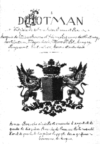
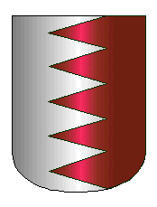
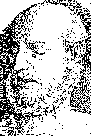

Preserved copy of the former audcent.com genealogy page. Original research credited to David B. Audcent and contributors.
Go to links on this page:
Families: branch d'AUTHEMAN
(Mauritius) - d'Aillebout -
Aubelin alias Ambelin -
Audcent & Pinot de Moira -
de Marle - de Manthet
d'Argentenay - de Vie -
Laas -
Adam

Other descendants of Hotman family - Unlinked lines
family AUTHEMAN of Eygalieres France, &
HOTTMANN of Grunbach (presumed Germany),
other unconnected lines
All additions or corrections gratefully received:
see also
footnotes
Note: The illustration is taken from the cover of Francois' & Mario's
d'Hotman printed Genealogy, and came from records held by von d'Uthman,
the German branch of the family.
A second historical genealogy. In this instance I have been
fortunate enough to obtain sufficient information from public sources and
the assistance of my nephew Geoffrey Audcent, in examining various English
texts, to set out this famous French Legal family from whom the Audcent
and Pinot de Moira families of England descend. In 1997,
Geoffrey visited Paris, France and returned with an extensive extract from
the "Dictionnaire de la Noblesse" reprinted in 1980, and I have updated this
work as a result of this latest knowledge. There does appear to be minor
variations in spelling between the various sources!
In October 1999, Cousin Jean-Pierre Hotman
de Villiers St Pol of Botswana, contacted me with the line of his descendance
(via the 4th branch of the HOTMAN family) and the information has been duly
added - my thanks to him for his kindness.
In April 2000, Cousins Francois
& Mario d'Hotman de Villiers St Paul,
cousins, of Mauritius provided me with a specially printed family Genealogy
(No 49) produced by themselves on their family HOTMAN. There are
differences in detail and I have noted these below marked as follows:
(F&M in red italics). Where
the differences were minor, I have not taken account of them.
They also sent me the up-to-date line of their own branch of the
family, which I have now been able to include - my thanks also to them.
GENEALOGY
of the family HOTMAN (Seigneurs et Marquis de Villiers-St-Paul, Oise,
France)
(also noted by the family, Barons of d'Acheres
(Yvelines); Seigneurs de Fontenay, Mortefontaine (nr Plailly, Oise), Villegomblin
(?), Marigny (? Is this Marigny-en-Orxois), Rougemont (?), Montmelian (the
only place of this name is in Savoie, France), Maires (?) and other
lands).
| At the commencement of the 16th century, the family Hotman were
already one of the most important legal families in Paris. With others
they enjoyed an important role under the following Kings of France, Charles
IX, Henri III and Henri IV. The family originate from an area of modern
Poland, known as Silesia, and Lambert the son of Gerard the first known of
the family came to Paris, France from the town of Emerich, in the duchy of
Cleves.
One interesting fact is that my nephew Geoffrey Audcent, who has
undertaken some research on this family, found a printed portrait of Francois
Hotman, the famous professor of law, and his visual appearance (3/4 view)
was identical to a photograph of my GG Grandfather Hippolyte 'Henri'
Pinot de Moira (himself a lawyer), who was born some nine
generations later.
David B Audcent |
Armes:
Branche ainee: Parti emanche d'argent et de gueules de dix pieces;
Branche of Provence: Parti emanche d'or et de gueules de
dix pieces.
Supports: deux griffons
Couronne: de Marquis |
 |
FIRST KNOWN OF LINE
Gerard HOTMAN (alias Hottmann, Ottman, Hotman) was born about 1420
in Silesia and is known to have died there, of his marriage to [Catherine
SPAON <http://habitant.org/ancestry/p203.htm#P1248>] he had issue of
the following:-
-
Lambert HOTMAN who was born about 1445 and originated from the
town of Emmerich, in the Duchy of Cleves. A Silesian Burgher, he left
his native country to go to France with Duke Engelbert of Cleves, Comte
(elsewhere Duc) de Nevers, and settled in Paris after 1470. He is known
to have married three times, Marie BREMPT, Marie GARNIER and Catherine (alias
Jacqueline) DE VIE [dtr of Thibaut Vie and his wife
Marion <http://habitant.org/ancestry/p203.htm#P1248>]. In France
there were four main branches of the Hotman family all descended from him.
He died on the 24th December 1514 at Paris, and was buried in
the Church of the Innocents, and of his wives he had fourteen children, of
whom the following eight were from his last marriage:-
-
Lambert HOTMAN, who was Prior of the Monastery of St. Maurice at Senlis,
born in 1480 he died in February 1573, aged 84 years.
-
Adrien HOTMAN, Monk at Cluny
-
Thibault HOTMAN head of a branch of the family which became
extinct - m. Marguerite DE WATERYE
[<http://habitant.org/ancestry/p203.htm#P1248>]
and had issue:-
-
Blanche HOTMAN m. Andre THOMASSE of which marriage a daughter:-
-
Paule THOMASSE m. Francois ROBINEAU who had issue:-
-
Pierre ROBINEAU DE BECANCOUR m. before 1625 Renee MARTEAU b c1593,
d.6/1/1633 St Nicolas, Ile de France, Paris they had issue:-
-
Rene ROBINEAU DE BECANCOUR, b. c1625 St Nicolas, Paris, bur 12/12/1699
Quebec, Baron de Portneuf, m. c21/10/1652 Trois Rivieres, Quebec, Marie Anne
LENEUF b. c1632 Calvados, France bur 5/12/1702 Quebec dtr of Jacques Leneuf
de la Poterie and his wife Marie Marguerite Le Gardeur.
-
Pierre HOTMAN head of the fourth branch of the
family (see elsewhere)
-
Charles HOTMAN, Secretary to the King, he died without children on
the 28th July 1538.
-
Guillemette HOTMAN, d. 1577 who purchased on the 31/5/1560 from Nicolas
Lebouracher (widower of Jehanne de la Copchonnerye) the seigneurie de
Beufvilliers and other fiefs who married 1st Jean LE JAY (Secretary of the
King) b. 1552 and 2nd Jean LE TELLIER, Conseiller au Grand Conseil et Grand
Rapporteur he died before 1560.
-
Jehan LE JAY
-
Marguerite LE JAY m. 1st Jacques RIPAULT and 2nd Francois MAULEVAULT
she had issue:-
-
Madeleine RIPAULT m. James ALLAMANT (? is he the Seigneur du Guepean
son of Jehan d. December 1587 and his wife Philippe SORRE and brother of
Francois).
-
Marthe LE JAY m. Michel RIPAULT
-
Nicolas LE JAY d. beginning 1585 bur Parish Church Choisel, m.
21/6/1873 Madeleine GRON Dame de Maison Rouge de Tilly - she sold the seigneurie
of Buvilliers in 1587 to Jehan ALLAMANT who died in December of the same
year leaving of his marriage to Philippe SORRE two boys, James Seigneur du
Guepean and Francois Seigneur du Chatalet.
-
Nicolas LE JAY, c1574 d. 30/12/1640 Chevalier, Premier Pr sident
en la Cour du Parlement, Conseiller du Roy en ses Conseils d'Etat et
Priv s, Baron de Tilly, Maison Rouge et St Fargeau, Seigneur de Villiers
les Salles, Saintry, Br tigny sur Monts, Malabry, Paray, Conflans,
les Carri res, terres et rivi res qui en d pendent,
Garde des Sceaux des Ordres de sa Majest et Surintendant des Finances
des dits ordres he m. Madeleine MARCHAND. see web page:
http://perso.wanadoo.fr/arhfilariane.org/communes/stf_pth/lejay/lejai1.htm
-
Isabeau HOTMAN, who married Pierre LE LORRAIN, a man of some reputation,
she died the 1st August 1571 and was buried at Saint-Jacques, La Boucherie,
(which appears to be the small town near Nantes in Loire-Atlantique).
-
FIRST BRANCH
Jean HOTMAN, the third son of Lambert, Sieur de Balisy, born Paris
1479, Treasurer to the Order of Malta, buried at Saint-Bathelemy, of his
marriage to Thomasse LE LORRAIN he had issue of six known children who
follow:-
-
Pierre HOTMAN, the eldest son of Jean and his wife Thomasse Le Lorrain,
Seigneur de Fontenay. Pierre himself m. Jeanne MARTEAU, daughter of
N. de Marteau, Sieur de la Chapelle, and had issue of four known children.
He died before the 5th July 1578.
-
Francois HOTMAN, Seigneur de Marfontaine, Fontenay and Pailly
(F&M - Morfontaine, Fontenay, and Plailly -
could be either as Plailly is close to Villers St Paul, and Pailly has a
few villages with part name Villiers), Conseiller du Roi en ses
Conseils, Conseiller et Tresorier de l'Espargne in 1595, Ambassador
to Switzerland. Francois was present with Henri III at Blois when the
duc of Guise was assassinated on the 23/12/1588 in that chateau. He
died at Soleur in 1600 and is buried at Church of Ave Maria, Paris. He
married 1574, Lucrece GRANGER alias GRANGIER (F&M
'DE GRANGE'), the daughter of Jean, Seigneur de Liverdy (Liverdis),
also Ambassador to Switzerland and to Grisons and his wife Louise de Ruin
(F&M 'DE RHUYN'). Of their marriage
they had the following six children:-
-
Francois HOTMAN, Seigneur de Marfontaine
(F&M see above), Abbot of St-Medard de
Soissons, Chanoine de Notre-Dame de Paris. Il fut recu conseiller
clerc au Parlement le 14 June 1597 en la troisieme Chambre des Enquestes,
et monta a la Grand Chambre par la mort de N... Faye de Saint-Julien the
20th March 1617. He died on the 28th February 1636 at the age of 60
years.
-
Timoleon HOTMAN, Seigneur de Fontenay, Treasurer of France at Paris,
died 1650. Of his marriage to Marie Marcelle DE BOUQUEVAL, dtr of Claude
de Bouqueval, Maitre des Comptes, and of Anne le Picard he had 5 known
children:-
-
Vincent HOTMAN, Seigneur de Fontenay, Nancelles, Marcigny, Conseiller
au Grand Conseil the 30th May 1650, Maitre des Requetes 23rd August 1656,
Procureur General de la Chambre de Justice 1663
(F&M 1668). Successively, Intendant
of Tours, of Bordeaux and of Paris, Conseiller d'Etat and Intendant des Finances
en 1669. He died 14th March 1683, without issue of his wife Marguerite
COLBERT, herself twice before widowed, for the first time of Denis l'Hermite,
Capitaine des Chevaux-Legers & Intendant de Cassel and for the second
time of Claude Machault, Seigneur d'Arnouville, Conseiller au Grand Conseil.
She was the daughter of Michel COLBERT, Conseiller au Parlement de
Paris, puis Maitre des Requetes (F&M state that
Marguerite was the daughter of Oudard COLBERT and his wife Antoinette
DE SEVIN).
-
Mathieu HOTMAN, Seigneur de Villegomblin, Capitaine au Regiment au
Picardie, married Ursule TROUILLARD, Dame de Baron, pres de Senlis, Oise,
she is known to have died 1st February (F&M
August) 1728. Of their marriage they had issue of the following
children:-
-
Vincent-Marguerite HOTMAN, Seigneur de Villegomblin and de Baron,
Oise, he died, without issue, on the 12th February 1751, having been contracted
in marriage in 1726 to Sophie or Marie DE BREGET.
-
Timoleon HOTMAN, Chevalier de Malte the 31st August 1700.
-
Mathieu HOTMAN, Chevalier de Malte, received on the 27th September
1708.
-
Marguerite HOTMAN, Abbess de St Glossinde de Metz.
-
Other daughters, names unknown, nuns.
-
Timoleon HOTMAN, Chevalier de Malte, killed at Sea near Buenos Aires
1658 DSP. ["Fils d'un tr sorier de France, Paris, il fut
re u comme chevalier dans l'ordre de Malte en 1631. Dans les ann es
1640, il se signala comme corsaire dans des combats contre les Turcs en
M diterran e. Le 10 f vrier 1650, commandant la
fr gate La Louise mouillant l' le de Jersey, il y
re ut du prince de Galles (le futur roi Charles II), alors en exil,
une commission pour prendre sur les navires du Commonwealth. Arriv
l' le Saint-Christophe en 1652, probablement sur la m me
fr gate arm e alors de 22 canons, il s'entendit avec son
sup rieur, le commandeur de Poincy, pour reprendre l' le de
la Tortue sur le protestant Levasseur. Ce dernier tant mort, Fontenay,
accompagn du sieur de Tr val (un neveu de Poincy), fut rapidement
reconnu comme gouverneur par les habitants de l' le apr s avoir
amnisti les assassins de son pr d cesseur. D s
son entr e en fonction, il favorisa les courses des flibustiers contre
les Espagnols, renvoyant m me son lieutenant en course sur sa
fr gate. Cependant, depuis Santo Domingo, les Espagnol se rendirent
ma tres de la Tortue en mai 1654. Son fr re cadet Thomas ayant
t conduit comme otage Santo Domingo, le chevalier
s'installa au Port Margot d'o il tenta sans succ s de reprendre
(ao t 1654) la Tortue avec l'aide de boucaniers avant de repasser en
France. Quatre ans plus tard, montant le Gaspard, arm par le
mar chal de La Meilleraye, il fit un voyage au Br sil mais
il p rit lors d'une combat contre des Hollandais et des Espagnols
devant Buenos Aires"
<http://www.oricom.ca/yarl/F/F.html>].
-
Anne Marie HOTMAN, married to Francois DE PORTAIL, Conseiller au Chatelet,
puis Maitre des Comptes, the son of Antoine DE PORTAIL Procureur du Roy at
Mans. Of the marriage there was no issue.
-
Madeleine HOTMAN, known to have married twice, 1st Elie D'AILIGER
DE SAINT CYRAN (F&M 'Eli d'Alger DE SAINT
CYRANS'), and 2nd on the 22nd November 1660
(F&M 1668), Claude DE ROCHEFORT, Comte de
Luce.
-
Paul HOTMAN, Enseigne aux Gardes.
-
SECOND BRANCH
Philippe HOTMAN, Seigneur de Morfontaine,
Montmelian and Pagny, 4th son of Francois Hotman and Lucrece Granger
(F&M 'DE GRANGE'). Maitre d'Hotel
du Roi, Intendant des turcies et levees de France. He died 21st February
1643 and is buried at the Church of Ave Marie, Paris. He married
Catherine HOTMAN, his cousin, the daughter of Pierre
HOTMAN, Seigneur de Fontenay, Conseiller du Chatelet and Catherine
CHAMPIN, and grandaughter of Philippe Hotman, Seigneur de Germaine, Conseiller
au Chatelet, ne in 1553, mort le 14 decembre 1593 et Catherine de Bardoulleau
and great granddaughter of Pierre Hotman, Seigneur de Villiers St Pol, the
fifth son of Lambert Hotman and his wife Paule de Marle. Of his marriage
Philippe and Catherine had for issue:-
-
Francois HOTMAN, Seigneur de Morfontaine (1643), Marquis de
Villiers-Saint-Georges, pres de Provins, Ile de France, Maitre d'Hotel du
Roi. He married Marie-Therese THEVENIN, she died in August 1672, and
was herself buried in the Church of the Ave-Maria, Paris. Of their
marriage they had the following issue:-
-
Francois-Ambroise HOTMAN, who died without issue.
-
Marie Catherine D'HOTMAN DE MORFONTAINE was Godmother at bap 4/8/1683
Fontenay-sur-Conie, of Marie Catherine, dtr of Estienne Lhomme, procureur
fiscal of that town, and his wife Marie Caillar (probably
Caillard).
-
2 other daughters unknown.
-
Nicolas HOTMAN, who inherited the titles from his elder brother of
Seigneur de Fontenay and de Morfontaine at date unknown, Capitaine au Regiment
de Normandie, died 24th October 1705. He appears as Godfather at the
bap 11/11/1678 Fontenay-sur-Conie, of Nicolas son of Estienne Lhomme and
his wife Marie Caillard, whilst the Godmother was Louise de Vallade who must
be related (?a sister) to Marguerite wife of his brother Pierre. He
married Anne POCHON (at bap son Jacques called PORCHON), of the town of Orleans,
daughter of Nicolas, Sieur de Cormorin, and herself the Godmother of Jacques
(son of Jacques Josset and his wife Simone Legas) who was bap. 2/10/1684
Fontenay-sur-Conie. Of their marriage they had issue of the following
children among others:-
-
Louis HOTMAN, who died without issue.
-
Nicolas-Hector HOTMAN, born on the 14th March 1684, Seigneur de Fontenay
(1705), en Beauce and des Maires. He was Godfather at the bap 20/1/1715
Fontenay-sur-Conie of Marie Marthe Nicole dtr of Jean Bouclet and his wife
Marie Grenet. He married at Orleans in 1708, Claude DE JOGUES, and
had the following issue:-
-
Nicolas-Guillaume-Hector HOTMAN this is certainly Nicolas Hector Hotman
who was Seigneur de Fontenay b. c1710 and who was buried in the Parish Church
at Fontenay sur Conie 4/3/1766 aged c56..
-
Jean-Alexandre HOTMAN, Seigneur de Fontenay (presumably inherited
from his brother) and des Maires, Capitaine au Regiment de Chartres. He
married by Contract dated 9th May 1755, Marie-Therese BAYET-DE-BOISSY, the
daughter of Charles-Borromee (Francoise states Charles-Baromee BAYET), Seigneur
de Boissy and Marie-Francoise POCHON-DE-BEAUREGARD. It is not known
if they had issue.
-
Antoine HOTMAN, Chanoine de l'Eglise d'Orleans.
-
Louis-Cesar-Charlemagne HOTMAN, of whom nothing is known.
-
Claude DE HOTMAN who was Godmother at the bap 26/1/1723
Fontenay-sur-Conie, of Charles Claude son of Francois Badin, labourer and
his wife Francoise Lecoq.
-
Other daughters unknown..
-
Jacques Nicolas HOTMAN bap 29/6/1695 Fontenay sur Conie having for
Godfather Jacques Lambert, escuier, sieur de Cambray, conseiller du Roy,
maistre des eaux et forets du duche d'Orleans, and for Godmother, Marie de
Gauvignon, dtr of Jean, escuier, sieur de La Godiniere and his wife Marie
Porchon.
-
Pierre HOTMAN, Seigneur de Fontenay, died without issue, having married
Marguerite DE VALADE who was Godmother to Jean Rene bap 23/11/1672
Fontenay sur Conie, the son of Rene de Courtalvert and Anne du Boquet.
This would seem to be the Pierre de Hotman, chevalier, sgr de
Fontenay-sur-conye, who was bur at Fontenay sur Conie on 2/3/1682 aged about
45 (thus born c1637).
-
Robert HOTMAN, who died young.
-
Catherine HOTMAN, Religieuse at Longchamp.
-
Marie-Louise HOTMAN, Religieuse at Notre-Dame de Meaux.
-
Marie HOTMAN d. 1626 m. 12/7/1596 Vincent
BOUHIER, Seigneur (F&M 'Duke' ) de
Beaumarchais, Intendant des ordres du Roi from 1599, Treasurer of l'Epargne
in 1602 on the resignation of his father-in-law, the son of Robert and his
wife Marie Garreau from Sables d'Olonne. He was arrested for embezzlement,
escaped from prison and lived in Noirmoutier until his death, condemned 25/1/1625
to be hanged in effigy. Of their marriage they had two daughters (For
FULLER line of descent click here):-
-
Marie BOUHIER m. 2/7/1611 Charles COSKAER duc DE LA VIEUVILLE (b.
& d. Paris c1582-c1653), grand fauconnier de France, minister of finance,
thus introduced Richelieu to the King's Council. Lost his job and fled
to Brussels, before being arrested for embezzlement, returned under Mazarin
and held the post of Minister of Finance yet again. Of this marriage one
known daughter who follows:-
-
Lucrece Francoise DE LA VIEUVILLE d. 1678, m. 29/4/1655 Ambroise Francois
duc DE BOURNONVILLE d. 12/12/1693, soldier for Louis XIV during the Fronde,
granted title marechal des camps, governor of Paris (1657-62), and following
the death of his wife in 1678 he became a priest. Of this marriage
there was issue (see below)-
-
Lucrece-Marie BOUHIER d. 19/2/1666 m. 1st Louis DE LA TREMOILLE, marquis
de Noirmoutier, and 2nd in 1617, Nicolas DE L'HOPITAL, marquis de Vitry,
captain of the guards of Louis XIII, he was responsible for the arrest and
killing of Concini on the 24/4/1617, and became a marechal of France. Of
her first marriage she had issue (see
below).
-
Louise HOTMAN m. 1st Catherin Jean D'AUMALE, Lieutenant des Cent-Suisses
de la Garde du Roi & Gentilhomme ordinaire; and 2nd Josias DE MONTMORENCY,
Seigneur de Bours, Captain aux Gardes.
-
Anne HOTMAN m. Leonard KERQUISINEM, Auditeur des Comptes.
-
Nicole HOTMAN m. Louis
DU HAMEL, Seigneur de
Guisseville, Auditeur des Comptes.
-
Catherine HOTMAN married twice, 1st Nicolas DE VERDUN, Intendant des
Finances, and had issue of a son who follows, and 2nd Francois DE FORTIA,
Seigneur de la Grange, Tresorier des Parties Casuelles, he died in 1595 and
she died in 1627.
-
Nicolas DE VERDUN, First President of the Parliament of Paris.
-
THIRD BRANCH
Charles HOTMAN, 1st of name, 2nd son of Jean Hotman and his wife Thomasse
le Lorrain, born almost certainly in Paris. Seigneur d'Acheres &
de Rougemont, Auditeur des Comptes the 4th December 1531
(F&M 1551), and Maitre des Comptes de Paris.
An ardent RC he became involved in the Parisian Branch of the Catholic League
(this later formed the basis of the 'Council of Sixteen'). Under the
name of 'La Roche Blond' he held meetings of the Parisian League at his Paris
home. One of the leading organisers and financial officers, at one
time they had a treasury of 300,000 crowns for their operations. He
died on the 26th February 1588 and was buried at Saint-Paul. He married
on the 3rd February 1556 Genevieve PERROT, the daughter of Miles
Perrot, Maitre des Comptes and his wife Madeleine GRONT
(F&M 'GRON HENEUX'), and she died on
the 2nd December 1569. Of their marriage they had the following known
issue:-
-
Charles HOTMAN, 2nd of name, Seigneur
d'Acheres and de Rougemont, Maitre des Comptes, fut prive de son office en
1594, pour avoir ete ardent Ligueur. He married
Marie BALLARD, the daughter of Nicolas and his wife Jeanne
Hemmont (F&M
HENON), and had for issue the
following children:-
-
Philippe HOTMAN, of whom nothing is
known.
-
Jacques HOTMAN, of whom nothing is
known.
-
Jean HOTMAN, Abbe de la Cour-Dieu.
-
Charles HOTMAN, maintenu dans sa noblesse par
Arret de 1671, with Jean and Nicolas his brothers.
-
Nicolas HOTMAN, of whom nothing is
known.
-
Marie HOTMAN, the wife of Nicolas BOUCHAVESNES
(? there is a Bouchavesnes-Bergen in Picardy, France and in the same
area the village of Bousies), Seigneur de Boufies (?
Bousies).
-
Anne HOTMAN, who married N... BRACHET, Seigneur
de Boueche (F&M 'de la Bouvesche'
or 'Brouvesche'
).
-
Madeleine HOTMAN, who married N. LOTTIN, Conseiller
au Parlement de Paris.
-
Madeleine HOTMAN, born December 1558, who married Olivier DE FONTENAY,
Conseiller au Parlement, of which marriage there was issue of one son and
a daughter.
-
Jean HOTMAN, Greffier at the Cour des Monnoies the 18 December 1558,
m. Catherine BOUCHER, dtr of Pierre Boucher, Sieur d'Orsay, avocat au Parlement
de Paris, and his wife Michelle de la Grange-Trianon
(F&M Jeanne de la Grange), of which marriage
there was issue of one known daughter:
-
Madeleine HOTMAN, m. Jean DE CORMONT
(F&M 'DE CIMONT'), Seigneur de Villeneuve,
Governor of Pont-sur-Seine, she died in 1595 and left children.
-
Lamberte HOTMAN, m. Michel VIALART, President au Grand Conseil, recu
en 1572.
-
Anne HOTMAN who married three times, 1st Jean BOURSIER , 2nd
Jean VIVIEN and 3rd Guillaume PICHONNAT.
-
Guillemette HOTMAN of whom nothing is known.
-
FOURTH & LAST BRANCH
Pierre HOTMAN born around 1485 in Paris, the fifth son of Lambert
Hotman and his wife, Catherine (alias Jacqueline) DE VIC. Seigneur
de Villers Saint-Paul and 1st Marquis of this name. Entering into the
legal profession and practising at the Paris Bar, which he left in 1524 to
take up an official appointment in the Department of Woods and Forests (known
as the 'Marble Table'), and here it is recorded that he performed valuable
services of 'reformation' which is say that of augmenting royal privilege.
On the 5th September 1544 he was rewarded with the charge of Conseiller
in the Parlement of Paris. In 1547 he also became one of the Judges
in the 'Chambre Ardent' (the Burning Chamber') responsible for the trial
of heretics. Married before 1524, to Paule DE MARLE,
who herself came from a family of legal nobility in Picardy, having for father
Vaast (alias Waast) de Marle, Seigneur de La Falaise, Vaugien & de
Villiers-Saint-Pol, and his wife Jacqueline Dupuy alias 'Du Puis'. Her
brother, Henri de Marle was a Conseiller du Parlement and one of the Judges
responsible for trying Charles Dumoulin, another brother was Prevost of Paris,
and a third Royal Secretary. Pierre died on the 27th March 1554 and
was buried in the church aux Carmes, Paris, leaving his wife a
widow with eleven children, six of them sons and a substantial estate which
included at least two houses within Paris and certain lands in the Ile-de-France.
Of his marriage among others he had the following known
issue:-
-
Francois HOTMAN, Seigneur and Marquis de Villiers St Paul, born on
the 23rd August 1524, Paris, the eldest son of Pierre Hotman and Paule de
Marle, married summer of 1548 either at Lyons or Geneva, Claude
AUBELIN the daughter of Guillaume, Sieur de la
Riviere-Goury (F&M Seigneur de
Riviere-Gouvy) (in the diocese of Orleans) and his wife Francoise
de Brachet, she was to die at Montbeliard in 1583 from the plague.
Francois died on the 12th February 1590, Basle, Switzerland, having
fathered seven known children, who follow after. Councillor of State
to the King of Navarre, author of many books, Doctor of Law at Orleans, Professor
of Roman Law and taught at Lyons, Geneva, Lausanne, Strasbourg, Valence,
Bourges and Basle.
NB A very good portrait of Francois Hotman (of which this is just
a part)
can be obtained at the following web site
http://www.uni-mannheim.de/mateo/desbillons/aport/seite133.html
-
Jean HOTMAN, Marquis de Villiers St Paul, the eldest and heir of his
father, holding the same religion as his father i.e. the reformed church.
Conseiller de Henri de Bourbon, Roi de Navarre & Maitre des Requetes
de son Hotel 14th January 1595, Agent de ce Prince en diverses Cours d'Allemagne,
lorqu'il fut devenue Roi de France sous le nom Henri IV, obtint Arret de
la Cour des Aides , qui le declara issu de noble lignee, and received the
title of Comte d'Hotman. He was the author of various works which were
however burnt as heretical in their time, and a friend of the english
poet Sir Philip Sydney. On the death of his father in 1590 he returned
to deal with his father's estate and became guardian of his three young unmarried
sisters. He died on the 26th January 1636, aged 84. He m. Renee Jeanne
DE SAINT-MARTIN, daughter of Rene, Seigneur de Vuvigne
(F&M 'Nuvigne'), who prior to her marriage
had been lady in waiting in England to Penelope Devereux Lady Rich
and had for issue:-
-
Charles Robert d'HOTMAN (1st of name), Comte d'Hotman, Marquis de
Villiers Saint-Paul and de la Meerie, Capitaine d'Infanterie. He married
Marie DE LA TAILLE DE VALENTIN, daughter of Valentin, Seigneur des Fresnay
and de Faronville, and his wife Louise de Montliard, Dame de Rumont, of which
marriage they had among other children:-
-
Charles Robert (2nd of name) d'HOTMAN, Comte d'Hotman de
Villiers-de-Saint-Paul, qui vivoit en 1642. He married Marie Marguerite
DE MORLAY
(F&M This Charles II doesn't appear on their
Genealogy, from his name he would appear to be the son of Charles Robert
but we are not certain of his connection).
-
Francois HOTMAN, Seigneur de la Tour married the 24th September 1634,
St Quentin, Madeleine DE BROSSE widow of PIerre Le Blanc de Beaulieu
(of whom she had six children) and the dtr of Salomon, famous architect and
his wife Florence Metivier (sister of Antoine, architecte des batiments du
roi). Both families were part of the Protestant High Society. Madeleine's
sister Anne de Brosse married Jean de Gravelle, the contract of marriage
being dated 11/11/1617 and had been witnessed by Francois' father Jean Hotman,
seigneur de Villiers-Saint-Paul. Of this marriage issued:
-
Francois HOTMAN.
-
Florent HOTMAN, of whom nothing is known.
-
Olympe HOTMAN, of whom nothing is known.
-
Cecile HOTMAN, of whom nothing is known.
-
Madeleine HOTMAN, of whom nothing is known.
-
Henri HOTMAN, Lieutenant d'une Compagnie en
Hollande.
-
Suzanne HOTMAN, who married Benjamin DE CUMONT, Seigneur de Vasset
and de Fiefbrun.
-
Theages HOTMAN, the god-son of Pierre Martyr, who have been in service
with the family 'des Chatillons' died in Languedoc in 1582. (Information
from "La famille d'Aillebout, Etude Genealogique et Historique", by Aegidus
Fauteux, Bibliothecaire de Saint-Sulpice, published Montreal
1917).
-
Daniel HOTMAN, Abbot of Saint-Nicaise at Rheims, then Pretre
de l'Oratoire, who have been confessor to the Landgrave of Hesse, and was
dis-inherited by his father having changed his religion. He died in
1634.
-
Marie HOTMAN who was b. 1558 Strasbourg, and was to marry twice, 1st
Jean MAZUEL (F&M MASUEL) and 2nd Rene
THELLUSSON (F&M TELUSSON).
-
Pierre HOTMAN, b. 1563, Conseiller of the King in his Chastelet of
Paris, who followed a career in commerce (information from "La
famille d'Aillebout, Etude Genealogique et Historique", by Aegidus Fauteux,
Bibliothecaire de Saint-Sulpice, published Montreal
1917).
-
Suzanne HOTMAN, who married twice,
1st to Jean DE MENTHET, elsewhere described as DE MANTEL,
DE MENTIETH, Sieur d'Argentenay and fairly certain to be the younger
and secondly named John son of Robert de Mentieth Laird of Kerse and Alva
and Sheriff of Clackmannan, (see ITEM 32 on the documentation page for evidence prepared by Geoffrey Audcent) by whom
she had issue of her eldest child Dorothy. Widowed, she married again,
Antoine D'AILLEBOUT,
Seigneur de Coulonge, Conseiller Ordinaire of the Council of M. Le Prince
de Conde. Of this marriage they had further issue, it is not clear
whether the second child Catherine d'Aillebout was the daughter of
Jean de Manthet or Antoine, but it is certain that the third child was the
issue of the latter. We have no further details of her.
-
Dorothee DE MENTHET, the daughter and thought
to be the sole issue of Suzanne and her first husband Jean de Menthet, Sieur
d'Argentenay. She is an forebear in her own right as a 'de Menthet' of the
Audcent and Pinot de Moira families of England.
She married her step-brother Nicolas
D'AILLEBOUT, Sieur de Coulonge on 6/5/1620 at Paris, also a forebear
in his own right as a 'd'Aillebout' of the Audcent and Pinot de Moira families
of England. Of their marriage they had issue of the following:-
-
Roger Antoine D'AILLEBOUT, remained in France, he is known to have
married and had issue of one son.
-
Charles D'AILLEBOUT DES MUSSEAUX, b. 1624, d. 19/11/1700 at Ville-Marie,
emigrated to Canada and arrived at Quebec 19 August 1648. Officer,
Commandant, Juge criminel and civil, Sieur des Musseaux. m. Catherine LE
GARDEUR DE REPENTIGNY the dtr of Pierre Le Gardeur de Repentigny and Marie
Favery, and Grand-daughter of Rene Le Gardeur de Tilly and
Catherine de Corday. Of his marriage he had issue of fourteen
known children, and it is from his line that the Audcent and Pinot de Moira
families of England descended.
-
Suzanne (alias Jeanne) D'AILLEBOUT, m. at Raviere in Champagne, Abraham
MARTIN and had for issue just one daughter.
See d'Aillebout family
Genealogy.
-
Catherine D'AILLEBOUT, it is not known for certain whether her father
was Jean de Manthet or Antoine d'Aillebout, (called after St Gertrude) Religieuse
in the Abbey of St Peter at Rheims.
-
Louis D'AILLEBOUT de Coulonge, b. 1612 Ancy-le-Franc, in Champagne
he m. Marie Barbe DE BOULLOGNE and had no issue. For details see
d'Aillebout
Genealogy.
-
Theodora or Theodorula HOTMAN the youngest of all the children, who
was the god-daughter of the famous Amerbach (information from
"La famille d'Aillebout, Etude Genealogique et Historique", by Aegidus
Fauteux, Bibliothecaire de Saint-Sulpice, published Montreal 1917), she married
Jean BURQUENON, Secretaire of the Prince de Conde.
-
Jean HOTMAN, Secretaire du Roi, who died at Tour in 1596.
-
Philippe HOTMAN, Seigneur de Germaine, Conseiller au Chatelet, died
on the 14th December 1593, aged 60 (b.c. 1533), and was buried at
Saint-Andre-des-Arcs. He married Catherine BADOULLEAU
(F&M 'DE BARDOULLEAU'), and is known to
have had the following issue:-
-
Pierre HOTMAN, Conseiller au Chatelet after his father, he died 26th
September 1624, aged 41 years, leaving of his wife Catherine CHAMPIN, one
daughter:-
-
Catherine HOTMAN, who married
Phillipe HOTMAN (the fourth son of Francois Hotman
and his wife Lucrece Granger (see entry above F&M
'DE GRANGE'). She died on the 6th August 1677, and was probably
buried with her husband in the church of the Ave-Maria at Paris. She had
for issue 6 known children (for details see the line of her
husband).
-
Paul HOTMAN, Secretaire du Roi,
-
Madeleine HOTMAN, who was to marry on the 6th November 1604, Jacques
VERSORIS, Seigneur de Colomieres, Secretaire du Roi of which marriage there
was issue.
-
Paul HOTMAN, Tresorier de la Venerie du Roi, he died at Riom in Auvergne
in 1593.
-
Antoine HOTMAN, an ardent RC and Member of the Catholic League. Advocate
General of the Parlement of Paris at the time of the League, he courageously
risked his life in the performance of his duties. In 1589 he was in
the employ of the Cardinal de Bourbon. He died in 1596 and is buried
at Saint-Andre-des-Arcs. Of his marriage to Jeanne ABSOLU, he had the
following issue:-
-
Antoine HOTMAN, Capucin.
-
Jacques HOTMAN, Tresorier du Duc de Guise en 1618, puis Tresorier
Provincial de l'Extraordinaire des guerres en Bourgogne. He married
twice without issue, 1st Madeleine AYRAULT, daughter of Rene, Procureur au
Parlement and his wife Madeleine Rosee, and 2nd Madeleine BOUCHERAT, daughter
of Guillaume, IIe of name, Auditeur des Comptes and his wife Marie
Ferrot.
-
Jean-Jacques HOTMAN, Seigneur de Marcigny, Avocat au Parlement, puis
Gentilhomme servant le Duc d'Orleans.
-
Catherine HOTMAN, wife of Alexandre DROUART, Greffier au
Chatelet.
-
(F&M add the name of a son Charles but DO
NOT include Jean-Jacques)
-
Jean HOTMAN, Prieur de Saint-Maurice de Senlis, died in 1572.
-
Charles HOTMAN, Secretaire de la Reine
Elizabeth, wife of Charles IX, died in 1589, and of his marriage to Marguerite
DE LA CROIX, he left the following issue:-
-
Michel HOTMAN, Secretaire du Roi, died in Provence 1611.
-
Marguerite HOTMAN, wife of N... PONCET, Intendant du Chevalier de
Vendome, Grand Prieur de France.
-
Anne HOTMAN, wife of Pierre CHAPELAIN, Seigneur de Palluau, Maitre
d'Hotel du Duc de Mercoeur, he died the 29th August 1624 and was buried at
Saint-Roch.
UNLINKED LINE: BRANCH
OF MAURITIUS known as
d'AUTHEMAN
The family were enobled in 1698 and held for arms "De gueules a trois
emanches d'argent, les pointes a senestre", they originate from the department
des Bouches-du-Rhone (Eygalieres, canton d'Orgon).
We still can't connect to the main tree? Can anyone
help?
Earlier links and information on ancestry of Joseph Marie David d'AUTHEMAN
(confirmed as HOTMAN) given by email from S bastien AVY, chair of
the AG13 (genealogical association of Bouches-du-Rh ne) sub-branch
in Salon given to Luc Chaput - the rest from the family.
Jean Antoine AUTHEMAN, prosecutor in Court, m. Catherine d'ANDRE and
had a son Louis who follows:-
-
Louis AUTHEMAN m. 12/8/1635 by Contract, Aix-en-Provence, Anne (Catherine)
de TRETS dtr of Andre de Trets, lawyer, deceased at time of marriage and
his wife Francoise de Fabry (Link possible to french author and scientist
Nicolas Claude Fabri de Peiresc who comes from that town). Of their
marriage issued:-
-
Jean Antoine AUTHEMAN m. 8/5/1671 Sainte Madeleine church, Aix-en-Provence
Jeanne VIGNET daughter of Beno t VIGNET (dead) & Susanne d'ESTIENNE
-
Jean d'AUTHEMAN Avocat en la Court, d. 15/11/1752 Eygui res
(13) aged 76 m. 1/2/1723 Saint Sauveur church, Aix-en-Provence, Marie Anne
RAMEYE /RAMAYE the dtr of Andre Rameye and his wife Mageleine Aubert, she
d. 4/9/1771 Eygui res (13) aged 85 of their marriage issued a
son:-
-
Joseph D'AUTHEMAN, m. Magdelon Scipione DAMIAN, b. 29/9/1722
Salon de Provence, dtr of Francois DE DAMIAN DE VERNEGUES (DAMIAN de
Vernegues, branch of DAMIANO, see sardimpex.com, the family held arms: De
g ue. I' toile 8 rais d argt; au chef d'or
charg d'une aigle de sab), and his wife Marie Anne DE RAVEL,
of which marriage the following children :-
-
Jean Fran ois Auguste D'HOTHEMAN 12/02/1750 Eygui res
(13) Godfather, godmother: Jean D'AUTEMAN, avocat la cour, Marie
Anne de RAVEL.
-
Marianne Fran oise Henriette D'AUTHEMAN 22/09/1751 Eygui res
(13) Godfather, godmother: Fran ois Laurens de DAMIAN uncle, Marianne
RAMAYE grand-mother.
-
Jean Antoine Fran ois Paul D'AUTHEMAN 25/08/1752 Eygui res
(13) Godfather, godmother: Parrain/t moin : Paul de LAUGIER de Lamanon,
Fran oise Marthe de CHATEAUNEUF, wife of Fran ois Laurent de
DAMIAN
-
COMMENCEMENT OF MAURITIUS
BRANCH
Joseph Marie David d'AUTHEMAN (later officially confirmed as d'HOTMAN),
Comte d'Hotman, and his family state that of Marquis de Villiers St Pol.
Avocat in the Parliament of Paris. Born at Eyguieres in Provence 23rd
June 1754, and was baptised there on the 25th of the same month (under the
name Joseph Marie David Autheman), having for Godfather Jean Baptiste David
de Sade and for Godmother Marie Therese Damian (wife of Sieur Paul Laugier
de Lamanon). He died at Port Louis, Isle Maurice (Mauritius) on the
30 July 1833 aged 80. He married Eleonore CORBIN DU PLESSIS, Marquise de
Courtempierre. Both he and his wife are known to have been present
on the Isle Maurice (Mauritius) around 1800-1810. Of his marriage they
had issue of:-
-
Marie Elisabeth d'HOTMAN m. 28/7/1862 Port Louis, MUS, Mauritius,
Louis Marie Vincent DE BRUGADA DE VILLE the son of Antoine and his
wife Marguerite Brosse de Cumpray. Of this marriage issue:-
-
Antoine DE BRUGADA DE VILLA b. 1863 d. 1918 Paris 75
-
Marguerite DE BRUGAD DE VILLA b. 1864 m. Auguste MAUREL
-
Jeanne DE BRUGADA DE VILLA b. 1866 d. 1867
-
Louis DE BRUGADA DE VILLA b. 1868
-
Charles Roger DE BRUGADA DE VILLA b. 1/8/1869 Curepipe, m 1900,
Marie Joseph LABAUVE D'ARIFAT dtr of Auguste Andre Laurent Constant and his
wife Emilie Denise Helene Therese Brousse de Gersigny, of this marriage
issue:-
-
Renaud DE BRUGADA DE VILLA b. 23/11/1900 Moka, Mauritius.
-
Leon DE BRUGADA DE VILLA b. 1870
-
Victor DE BRUGADA DE VILLA b. 1871 m. Adrienne MAUVIS b. Greece
-
Henri Enrique DE BRUGADA DE VILLA b. 1873 m. Laurence RATHIER DUVERGE,
of which marriage issue:-
-
Henri DE BRUGADA DE VILLA
-
Guy DE BRUGADA DE VILLA
-
Louis DE BRUGADA DE VILLA
-
Magdeleine DE BRUGADA DE VILLA b. 1876
-
Marie DE BRUGADA DE VILLA b. 1879 d. 1881
-
Ange Alexandre Marius d'HOTMAN, born in the Isle of Mauritius on the
20th August 1810, Marquis d'Hotman de Villiers St Pol, he married 17th September
1837 Flacq, MUS as recorded in the Civil Registers of the town of Port Louis,
Mauritius, Marie Genevieve Aurore BROUSSE DE GERSIGNY, herself born
on the 1st July 1820 Flacq, MUS, Mauritius, the dtr of Sieur
Athalie Denis Antoine Brousse de Gersigny and his
wife Marguerite Jeanne Fabre. Of this marriage there was issue of 9 known
children:
-
Victor d'HOTMAN who died without issue.
-
Francois 'Arthur' d'HOTMAN, Marquis de Villiers St Pol, in accordance
with his certificate of baptism, born 2nd March 1843 and baptised on the
19th October of that year in the Cathedral of St Louis, Ile Maurice, having
for Godparents, F. Bouisson and D. Niox. He died on the 27th August
1891. He married on the 21st August 1866 at Pamplemousses, on the island
of Mauritius, his 1st cousin, Marie Louise 'Emma' BROUSSE DE GERSIGNY, the
daughter of Francois Edouard Brousse de Gersigny and Louise Henriette Aurelia
Legentil both residents of that district. In the absence of any male
heirs she inherited the title of Comtesse de Gersigny. Of their marriage
there was issue of 6 children:-
-
Charles d'HOTMAN who died without issue.
-
Charles Francois 'Gaston' d'HOTMAN, Marquis de Villiers St Pol, born
at Port Louis, Isle Maurice (Mauritius) on the 24th May 1871, he died on
the 5th May 1945 and is buried at St Jean. He married Marguerite Marie
MAMET on the 14th July 1892 and of their marriage they had issue of 12 children
who follow:-
-
Edouard d'HOTMAN, b. 10th April 1893, Marquis de Villiers St Pol,
d. soon after his father in 1945 Paris, married Genevieve LAAS
D'AGUEN, daughter of the Comte d'Aguen and his wife Marguerite Mathet.
Following the death of his father
in 1945 he and his nephew Marie Gerard d'HOTMAN researched the family
genealogy to prove Edouard's claim to the family titles - the Marquis de
Villiers St Pol. These were officially granted and he and his family
returned from Mauritius to France.
-
Guy d'HOTMAN DE VILLIERS, who remains a resident of France,
and who is heir apparent to the title Marquis de Villiers St Pol. To
this date 24 April 2000, he has no issue.
-
Bernard d'HOTMAN DE VILLIERS
-
Michael d'HOTMAN DE VILLIERS
-
Christiane d'HOTMAN DE VILLIERS m. Unknown MONTESQUAT
-
Kendall MONTESQUAT m. Alain
d'Hotman de Villiers, the son of Marie Joseph Rivaltz d'Hotman de Villiers
and his wife Suzanne Staub
-
Ghislaine d'HOTMAN DE VILLIERS
-
Arthur, d'HOTMAN DE VILLIERS ST POL, born 10th April
(F&M 3rd May) 1894, he died sometime
around 1984 in Mauritius and married 1st Louise ADAM,
of which marriage issue of the following 4 children, and 2nd Gisele
GEBERT (of whom no issue):-
-
Marie Alix d'HOTMAN DE VILLIERS d. in the late 1970's having m. unknown
and had issue of 5 children.
-
Bridget m. unknown VOS had issued of 2 children and lives South
Africa.
-
Veronique m. unknown HILL and lives in the UK
-
Marc d'Hotman m. unknown and also has 2 children, living in South
Africa
-
Francois has 2 children, living in South Africa
-
Patrick has children and lives South Africa.
-
Marie 'Robert' d'HOTMAN DE VILLIERS, b?
9/11/2005, a farmer, Zimbabwe, pilot in the RAF m. Doris UNKNOWN and they
had issue of 4 children:-
-
Robert d'HOTMAN DE VILLIERS, Physician, Durban, South Africa, emigrated
to Australia. He m. 3 times, 1st unknown, 2nd to Cleo Anthea Ehlers
(orig. surnamed von Ehlershausen of Germany) and he had issue of a dtr 'Kate'
who folows, he then m. 3rd Louise (UNKNOWN) and had issue of two more children
who also follow:-
-
Kate Sarah d'HOTMAN DE VILLIERS SAINT POL
-
Daniel d'HOTMAN DE VILLIERS
-
Gabrielle d'HOTMAN DE VILLIERS
-
Paul d'HOTMAN DE VILLIERS, Civil Servant, Zimbabwe, he married UNKNOWN
and is thought to have had issue of 2 children
-
Lesley d'HOTMAN DE VILLIERS, who moved to Australia, and m. Unknown
HILTON-BARBER and of her marriage had issue of:-
-
Lance HILTON-BARBER
-
Sarah HILTON-BARBER
-
Dennis d'HOTMAN DE VILLIERS, d. in a car accident
-
Marie 'Gerard' d'HOTMAN DE VILLIERS ST POL, who died
around 1989 South Africa, he is known to have married and had issue of 4
known children:-
-
Jean-Pierre d'HOTMAN DE VILLIERS ST POL, Project
Manager, Botswana.
-
Francoise d'HOTMAN DE VILLIERS ST POL, living Cape Town, South
Africa
-
Jocelyn d'HOTMAN DE VILLIERS ST POL, who married a businessman and
lives in Australia.
-
Danielle d'HOTMAN DE VILLIERS ST POL, PhD in Entomology, living in
Hoedspruit, South Africa.
-
Marie Danielle d'HOTMAN d. 2001 m. c. 1955 South Africa, Giuseppe
SERAFINO and they had issue:-
-
Luigi Giuseppe SERAFINO resident South Africa b. 1962 who m.
unknown and had issue:-
-
Carlo Daniel SERAFINO b. 1991
-
Nicholas John SERAFINO b. 1993
-
Robin Michael SERAFINO b. 1996
-
Gianni Thomaso SERAFINO b. 1964 m. unknown, emigrated to Australia
and has 2 known children:
-
Philippe d'HOTMAN DE VILLIERS, born on the 20th March 1895 and married
to Myriam MAUJEAN
-
Marie Joseph 'Christian' d'HOTMAN DE VILLIERS d. 12/12/2006
m. 'Sylvie' STAUB d. 2007
-
Marie Joseph 'Mario' d'HOTMAN DE VILLIERS m. Sarah
Nathalie BROUARD
-
Gaston Christian d'HOTMAN DE VILLIERS
-
Claire Marie d'HOTMAN DE VILLIERS
-
Emma Louise d'HOTMAN DE VILLIERS
-
Leonie Anne d'HOTMAN DE VILLIERS
-
Marie Joseph 'Patrice' d'HOTMAN DE VILLIERS m. Rosemary TENNANT
-
Catherine d'HOTMAN DE VILLIERS m. 2002 Ewen Hugh Charles WILSON of
Belfast.
-
Maximilien Charles WILSON b. 2005
-
Francis Patrick WILSON b. 2007
-
Raphael Christian WILSON b. 2008
-
Charlotte d'HOTMAN DE VILLIERS
-
Marie Joseph 'Jean-Claude' d'HOTMAN DE VILLIERS m. 1st Laurence D'ARGENT
of which marriage issue 2 daughters, 2nd Isabelle BOURGAULT issue of Cedric
who follow:-
-
Sophie d'HOTMAN DE VILLIERS
-
Nadia d'HOTMAN DE VILLIERS
-
Cedric d'HOTMAN DE VILLIERS
-
Marie Joseph 'Emmanuel' d'HOTMAN DE VILLIERS m. Marie-Celine DE
FLEURIOT
-
Emmanuel (2nd of name) d'HOTMAN DE VILLIERS, pilot Air Mauritius
-
Brigitte d'HOTMAN DE VILLIERS School Teacher, Black River,
Tamarin
-
Nicolas d'HOTMAN DE VILLIERS of whom nothing is known
-
Caroline d'HOTMAN DE VILLIERS, works in Tourism in Grand Baie
-
Lucie d'HOTMAN DE VILLIERS Student
-
'Maryse' d'HOTMAN DE VILLIERS m. Eric LECOURT DE BILLOT
-
Marie Joseph 'Rivaltz 'd'HOTMAN DE VILLIERS 1925-1999 m. Suzanne STAUB
b. 1925 (sister of Sylvie)
-
Alain d'HOTMAN DE VILLIERS b. 1952
m. Kendal MONTESQUAT (niece of Guy d'HOTMAN
DE VILLIERS, heir to title Marquis de Villiers St Pol).
-
Clothilde d'HOTMAN DE VILLIERS b. 1980
-
Edouard d'HOTMAN DE VILLIERS b. 1982
-
Alexandre d'HOTMAN DE VILLIERS b. 1984
-
David d'HOTMAN DE VILLIERS b. 1990
-
Francois d'HOTMAN DE VILLIERS b. 1954
Asst Manager, Cargo Handling Corporation, Mauritius m. Benedicte WIEHE (sister
of his brother Rivaltz's wife)
-
Julien d'HOTMAN DE VILLIERS b. 1985
-
Alexia d'HOTMAN DE VILLIERS b. 1988
-
Marie Anne d'HOTMAN DE VILLIERS b. 1956 m. Gerard Cadet DE
FONTENAY
-
Nicolas DE FONTENAY b. 1979
-
Sandrine DE FONTENAY b. 1982
-
Amaury DE FONTENAY b. 1989
-
Marie Louise d'HOTMAN DE VILLIERS b. 1958 m. Patrick
CAMBIER
-
Geraldine CAMBIER b. 1978
-
Isabelle CAMBIER b. 1981
-
Vincent CAMBIER b. 1987
-
Rivaltz (2nd of name) d'HOTMAN DE VILLIERS b. 1960 m Pascale
WIEHE (sister of his brother Francois' wife)
-
Camille d'HOTMAN DE VILLIERS b. 1989
-
Benjamin d'HOTMAN DE VILLIERS b. 1991
-
Myriam d'HOTMAN DE VILLIERS, married to Marcel MAUJEAN
-
Rene d'HOTMAN DE VILLIERS, who died an infant aged 2
-
Alice d'HOTMAN DE VILLIERS, married to Maxime MAUJEAN
-
Odette d'HOTMAN DE VILLIERS, married to Guillaume BECHARD
-
Jeanne d'HOTMAN DE VILLIERS ST POL, married to
her cousin Raymond d'HOTMAN ST VILLIERS ST POL, the
son of Louis d'Hotman de Villiers St Pol and his wife Clemence Giblot du
Cray.
-
France d'HOTMAN DE VILLIERS, married to Myriam OLIVRY
-
Therese d'HOTMAN DE VILLIERS
-
Pierre d'HOTMAN DE VILLIERS
-
France d'HOTMAN DE VILLIERS
-
Michel d'HOTMAN DE VILLIERS
-
Josee d'HOTMAN DE VILLIERS
-
Madeleine d'HOTMAN DE VILLIERS
-
Susanne d'HOTMAN DE VILLIERS, married to Frederick D'ARGENT
-
Yvonne d'HOTMAN DE VILLIERS ST POL, married to
her cousin Octave Marie d'HOTMAN DE VILLIERS ST POL
for details of issue see his entry.
-
Raoul d'HOTMAN, married to Raphaelle ESNOUF
-
Claude d'HOTMAN DE VILLIERS
-
Marc d'HOTMAN DE VILLIERS
-
France d'HOTMAN DE VILLIERS
-
Marie d'HOTMAN DE VILLIERS
-
Yves d'HOTMAN DE VILLIERS
-
Aurelia d'HOTMAN DE VILLIERS, who died without issue.
-
Aurore d'HOTMAN DE VILLIERS, who married Arthur PIGNOLET DE
FRESNES
-
Angele d'HOTMAN DE VILLIERS, who died without issue.
-
Alice d'HOTMAN DE VILLIERS, who died without issue.
-
Pierre Charles d'HOTMAN DE VILLIERS ST POL, who died on the 16th February
1918 aged 66, he married Adelaide STAUB and had issue of the
following:-
-
Marius d'HOTMAN DE VILLIERS eldest son of Pierre Charles, died on
the 11th June 1973, he married on the 22nd February 1922 Nancy GACHET and
had issue:-
-
Jacques d'HOTMAN DE VILLIERS
-
Pierre d'HOTMAN DE VILLIERS
-
Roger d'HOTMAN DE VILLIERS
-
Therese d'HOTMAN DE VILLIERS
-
Marc d'HOTMAN DE VILLIERS
-
Marguerite d'HOTMAN DE VILLIERS, who married Charles LOUMEAU
-
Fernand d'HOTMAN DE VILLIERS, died the 20th February 1923 aged 31
without issue.
-
Marie d'HOTMAN DE VILLIERS, married Louis DE BRUGADA VILLA
-
Amelie Louise d'HOTMAN DE VILLIERS, married twice, 1st 22/5/1871 Plaines
Wilhems, Mauritius, Adrien Francois Noel MACQUET b. 13/2/1842 Plaines Wilhems,
son of Adolphe Noel and his wife Louise Laure Brousse de Gersigny
(his 2nd marriage - 1st 30/7/1868 Constant Ernest Prevost de Langristin
of whom he had issue of a son Antoine Noel Ernest Henri) and 2nd Ernest
MAUREL
-
Noel Paul Georges MACQUET b. 1875 Plaines Wilhem, m. 22/12/1902 Curepipe,
Mauritius, Jeanne Marie RAIMBERT
-
Irma d'HOTMAN DE VILLIERS, married M. DE VERMELUN
-
Louis d'HOTMAN DE VILLIERS ST POL, who died on the 4th November 1916
aged 56. He married Clemence GIBLOT DU CRAY dtr of Felix and Marie
Furteau and had issue of 8 children:-
-
Felix d'HOTMAN DE VILLIERS
-
Genevieve d'HOTMAN DE VILLIERS, who married Henri HEIN
-
Madeleine d'HOTMAN DE VILLIERS, who married M. ANTELME
-
Maxime d'HOTMAN DE VILLIERS, who married a Frenchman unknown
-
Raymond d'HOTMAN DE VILLIERS
ST POL, who married his cousin Jeanne d'HOTMAN de Villiers
St Pol, the daughter of Gaston d'HOTMAN DE VILLIERS ST POL and his wife
Marguerite Marie Mamet. Their descendants remain in Mauritius.
Jeanne was known to be living at the age of 82, at Curepipe, Mauritius.
-
Jehan d'HOTMAN DE VILLIERS ST POL b. 1925 d. 1986 Mauritius dsp
-
Marie Louise 'Guillemette'
d'HOTMAN DE VILLIERS ST POL b. 1926, m. her cousin
Paul d'HOTMAN DE VILLIERS ST POL son of Frantz his paternal
uncle. For issue see his line.
-
Marie Louise 'Josette' d'HOTMAN DE VILLIERS ST POL b. 1927 midwive,
resident Mauritius.
-
Louis Joseph Jacques d'HOTMAN DE VILLIERS ST POL b. 1928 d. 29/8/2003
m. Rosemaries DE ROBILLARD residents Mauritius and had issue:
-
Marie-Line d'HOTMAN DE VILLIERS b. 1963 m. Baron THOMSON live South
Africa had issue a son:
-
Raymond d'HOTMAN DE VILLIERS m. Kathrine live Mauritius and had
issue:
-
Nathalie d'HOTMAN DE VILLIERS unmarried, resident South Africa has
issue:
-
Angelique d'HOTMAN DE VILLIERS
-
Serge d'HOTMAN DE VILLIERS ST POL b. 1/1/1929 d. 1979 on holiday South
Africa dsp.
-
Rosie d' HOTMAN DE VILLIERS ST POL b. 1930 lives Mauritius, no
issue.
-
Josiane d'HOTMAN DE VILLIERS ST POL b. 18/8/1932 d. 8/11/2003 m. Louis
SAXON d. (both in South Africa).
-
Suzel b. d' HOTMAN DE VILLIERS ST POL 1934 religious sister, resident
Mautitius.
-
Louis Joseph Sylvio d'HOTMAN DE VILLIERS ST POL b. 1935 m. Solange
Maryse GIQUEL b. 1937 reside South Africa, of their marriage they had
issue:
-
Marie Francoise 'Martine d'HOTMAN DE VILLIERS b. 1962 m. Stephen Charles
DUCKER resident in England of the marriage two children:
-
Garren Charles DUCKER b. 1989
-
Stephanie Jeanne DUCKER b. 1993
-
Marie Francoise 'Veronique' d'HOTMAN DE VILLIERS b. 1963 resident
South Africa, unm had issue of one child
-
Michelle d'HOTMAN DE VILLIERS
-
'Arnaud' Maurice d'HOTMAN DE VILLIERS b. 1966 m. Kim Unknown and have
issue of three children
-
Maxine d'HOTMAN DE VILLIERS
-
Justin d'HOTMAN DE VILLIERS b. 2002 twin
-
Quinton d'HOTMAN DE VILLIERS b. 2002 twin
-
Francois d' HOTMAN DE VILLIERS b. 1969 m. Angelique FROMENTIN, resident
in Australia (2003) issue 2 children:
-
Amy-Lee d'HOTMAN DE VILLIERS
-
Kate-Lyn d'HOTMAN DE VILLIERS
-
Marc d'HOTMAN DE VILLIERS b. 1978 resident South Africa
-
Nicolas d'HOTMAN DE VILLIERS b. 1980 resident South Africa
-
.Eric d'HOTMAN DE VILLIERS ST POL b. 23/9/1936 d. 1988 Mauritius,
m. Odile GO and had following issue
-
Didier d'HOTMAN DE VILLIERS ST POL m. Michelle resident South Africa
had issue:
-
Xavier d'HOTMAN DE VILLIERS ST POL
-
Nikita d'HOTMAN DE VILLIER ST POL
-
Audrey d'HOTMAN DE VILLIERS ST POL resident Mauritius
-
Alexandra d'HOTMAN DE VILLIERS ST POL m. and has children, resident
Mauritius
-
Isabel d'HOTMAN DE VILLIERS ST POL resident Mauritius
-
Noel Marius d'HOTMAN DE VILLIERS b. 24/12/1899 Port Louis (Ile Maurice),
Voyageur de Commerce, m. Therese HARDY b. 8/4/1906 Currepipe (Ile Maurice)
and of their marriage issued:-
-
Jacques d'HOTMAN DE VILLIERS
-
Jacqueline d'HOTMAN DE VILLIERS
-
'Arlette' Marie d'HOTMAN DE VILLIERS b. 31 October 1934, 89 Rue Dhavernas,
Amiens, d. 8/9/2002 Entrevaux, Alpes de Haute Provence, m. 8/8/1953 Paris,
Andre Michel MUFFAT-JOLY, separated by jugement rendered in 1975, divorced
in 1979 Paris.
-
Octave Marie d'HOTMAN DE VILLIERS ST POL, d.
bef 2003 who married 1st his cousin Yvonne d'HOTMAN
de Villiers St Pol, the daughter of Gaston d'HOTMAN DE VILLIERS ST POL and
his wife Marguerite Marie Mamet, on her death m. 2nd Nadege PILOT who survived
him. He is known to have lived in South Africa at
Pietermaritzburg when he was 82. Their descendants remain in
Mauritius.Octave well known in the sugar industry, and internationally known
for his thesis on the regeneration of soil.
-
His descendants at present unknown reside in Mauritius.
-
Frantz d'HOTMAN DE VILLIERS who married Eliza LARCHER of which marriage
known issue:-
-
Paul d'HOTMAN DE VILLIERS ST POL
m. his cousin Marie Louise 'Guillemette' d'HOTMAN
DE VILLIERS ST POL dtr of Raymond his paternal uncle. Of this marriage
issue of two children:
-
Chantal d'HOTMAN DE VILLIERS ST POL
-
Ghyslaine d'HOTMAN DE VILLIERS ST POL m. Peter DYE and reside in South
Africa, of this marriage two children:
-
Dominique DYE
-
Michelle DYE
-
Jules d'HOTMAN DE VILLIERS who married his 1st cousin Angele BROUSSE
DE GERSIGNY dtr of Francois Edouard and his wife Aurelia Le Gentil and granddtr
of Athalie Denis Antoine Brousse de Gersigny and
his wife Marguerite Jeanne Fabre.
-
Denis Charles Albert d'HOTMAN DE VILLIERS b. 1/10/1861 Port Louis,
d. 8/11/1924 27 Rue Marignan, Paris, Vicomte d'Hotman de Villiers St George,
Dr of medecine, chevalier de Legion d'Honneur, Member Medical Academia St
Petersburg, doctor to Tsar Nicolas II, m. 15/8/1866 Marie de ZILOTY, d. 24/3/1944
34 Rue de la Tourelle, Boulogne, Billancourt, the dtr of Jean, Gouverneur
of Bielorussia and his wife Marie de Mathias born
c1838 in Vosnisinsky ( Russia) d. 15/4/1910 27 rue de Marignan Paris aged
72yrs. 'Denis' Charles Albert and his wife are both burried at the Cemetery
of the P re Lachaise in Paris together with their daughter Tatiana
and Marie's mother, and of this marriage had issue:-
-
Serge d' Hotman de Villiers b c1870 who died around 1950 - d. in Tunisia
sans alliance.
-
Tatiana d'Homan de Villiers b. 8/2/1899 d. 13/2/1899 Paris, bur Pere
Lachaise cemetery.
-
Th r se Henriette Aim e D'HOTEMAN 26/05/1755
Eygui res (13) Godfather, godmother: Jean Baptiste de DAMIAN,
Th r se de GRIGNAN
-
Auguste Jean Baptiste Pierre D'HOTTEMAN le 08/07/1759 Eygui res
(13) Godfather, godmother: Jean Baptiste de SUFFREN Marquis de Saint Tropez,
Magdeleine de MEYRAN de LAGOY
-
Henry Joseph D'HOTEMAN 13/09/1760 Eygui res Godfather, godmother:
Jean Fran ois Auguste D'HOTEMAN Th r se Henriette D'HOTEMAN,
brother and sister
-
Fran ois Victor D'HOTEMAN 04/10/1761Eygui res (13)
Godfather, godmother: Fran ois Laurent de DAMIAN, Marie
Th r se de GOUCHE de St-Etienne, widow of the Comte de
Sade
Unlinked line AUTHEMAN
of Eygalieres, Provence
the following tree from the Armorial General de France
holding armes "de gueules a trois emanches d'argent,
les pointes a senestre"
Jean OTHERMAN Ecuyer, had for son:-
-
Antoine OTHERMAN Ecuyer, testa 1516, and had issue:-
-
Jean-Jacques OTHERMAN m. before 1519 Douce ESTIENNE of which he
had:-
-
Eyries AUTHEMAN Ecuyer, m. 1572 Anne ALTONITI and had issue:-
-
Jacques AUTHEMAN Ecuyer, Capitaine de Tarascon, m. 1587 Claude JAUSSIANE
of whom:-
-
Esprit AUTHEMAN Ecuyer, m. Louise DE PERRUSSI of whom a son:-
-
Jacques AUTHEMAN Ecuyer, testa 1668, m. 1663 Elizabeth POMME
-
Esprit (2nd of name) AUTHEMAN Ecuyer, m. 1696 Suzanne MARTIN dtr of
Pierre, Ecuyer, and Marguerite DU BEC, they had issue:-
-
Jacques AUTHEMAN Ecuyer, b. 1699, m. 1735 Marguerite LE BEGUE and
had issue:-
-
Joseph-Esprit d'AUTHEMAN b. 1729 d. 1795. avocat general et
lieutenant criminel in the senechaussee, juge royal 1756, who built
his home at 33 de la rue Roux-Alpheran at Aix, and which still belong to
his descendants, m. 1763 Anne-Therese GAUTHIER DE JOUQUES and had
issue:-
-
Jacques-Flavier AUTHEMAN Ecuyer, b. 1764, Avocat General en la Chambre
des Comtes de Provence in 1789.
Unlinked line HOTTMANN
of Grunbach, Wurttemberg
LIDIA my correspondant would love to find her family connection
corrections and additions gratefully received her web site in
Russian:-
http://www.umomiserdzem.narod.ru
Jacob HOTTMANN b. ? probably Hohenacker, Wurttemberg d. c13/1/1662
Hohenacker, m. before Sept 1657 Catharina UNKNOWN d. after 2/3/1667 and had
the following known issue but see this
NOTE:-
NOTE There is no birth record for Jacob
in the Hohenacker church registers. It is possible he came from elsewhere
perhaps Winterbach. If he was a native of Hohenacker, there were only
two Hottman couples having children during the period of his probable birth
(1620-1640): Andreas and Anna who had 3 identified sons, Georgius in 1631,
Johannes in 1633 and another Johannes in 1636; and Hans who had Johannes
1628 by Barbara who also gave him Michael 1631 and later another son Johannes
1635 by Catharina and a later son also Johannes 1643. The names of
these children are consistent with the names of Jacob's children but there
is no proveable connection. Hohenacker baptismal records for the period
1660-1700 were screened for instances where Jacob and his wife might have
appeared as baptismal witnesses that might suggest a connection to the other
Hottmans, but no such instances were found!
-
Johannes HOTTMANN b. Sept 1657 Hohenacker, Wurttemberg, d. 19/7/1729
Grunbach, Wurttemberg m. c 16/1/1686 Grunbach, Catharina KNAUR b. 20/3/1660
Grunbach, Wurttemberg, d. 8/3/1726 Grunbach and of this marriage
issued:-
-
Anna Barbara HOTTMANN b. 12/04/1687 Grunbach, d. 25/12/1690 Grunbach
an infant
-
Elisabetha HOTTMANN b. 17/11/1688 Grunbach d. unknown
-
Anna Maria HOTTMANN b. c6/10/1690 Grunbach, d. 8/5/1771 Grunbach m.
14/5/1715 Grunbach, Melchior ZEYHR b. c26 //1/1682 Grunbach, d. 28/2/1772
Grunbach
-
Johann Jacob HOTTMANN b. c16/8/1693 Grunbach d. 23/9/1763 Grunbach
m. 1st 16/7/1720 Grunbach, Elisabetha FISCHER, and 2nd 22/9/1735 Geradstetten,
Wurttemberg, Christina STRAUB b. 30/6/1710 Geradstetten, d. 14/12/1748 Grunbach
(dtr of Hans Jerg Straub, and his wife Margaretha Barchet) and again m. 3rd
9/11/1751 Grunbach, Maria Catharina UNKNOWN. Of his marriage with Christina
Straub he had issue of the following:-
-
Christina Margretha HOTTMANN b. 30/12/1737 Grunbach, d. 29/9/1793
Grunbach, m. 1st 30/5/1758 Grunbach, Melchior DOBLER b. 15/9/1728 Grunbach
d. 21/2/1782 Grunbach, m. 2nd 13/4/1788 Grunbach, Joseph DAUTEL, b. unknown
d. after 29/9/1793.
-
Johann Georg HOTTMANN b. 13/11/1738 Grunbach d. 4/3/1760
Grunbach.
-
Maria Catharina HOTTMANN b. 8/5/1741 Grunbach d. 14/7/1742 Grunbach
an infant
-
Johann Jacob HOTTMANN b. 16/3/1743 Grunbach, d. 15/4/1808 Grunbach
m. 7/7/1771 Grunbach, 1st Anna Maria GROTZ b. 27/1/1739 Grunbach, d. 3/12/1797
Grunbach, he m. 2nd 1/6/1798 Grunbach, Anna Maria HAMPP b. 21/3/1750 Buoch,
Wurttemberg, d. unknown.
-
Johann Antonius HOTTMANN b. 20/9/1745 Grunbach, Wurttemberg d. 26/10/1816
in his native town, Officer of the court, resident of Grunbach, m.
17/11/1772 Grunbach, Helena ZEYHR b. 11/3/1753 Grunbach d. 10/4/1834 Grunbach,
(the dtr of Daniel and his wife Anna Schanbacher), of their marriage they
had issue of 14 children:-
-
Helena HOTTMANN b. 10/11/1773 Grunbach, d. 27/7/1855 Grunbach m.
19/11/1799 Grunbach, Philipp David ILG b. 23/1/1766 Grunbach, d. 11/8/1831
Grunbach of which marriage there was issue:-
-
Philipp David ILG b. c11/1/1801 Grunbach, d. 9/3/1814 Grunbach
-
Helena ILG b. 19/2/1804 Grunbach, d. before 1810 Grunbach
-
Johannes ILG b. c23/6/1807 Grunbach, d. 13/3/1814 Grunbach
-
Friederika ILG b. c2/1/1811 Grunbach, d. 15/3/1814 Grunbach
-
Christiana ILG b. 27/5/1811 Grunbach, twin
-
Helena ILG b. 27/5/1811 Grunbach, twin
-
Carolina ILG b. 15/6/1819 Grunbach, d. 27/11/1821 Grunbach
-
Anna Margaretha HOTTMANN b. 7/10/1775 Grunbach, d. unknown
-
Antonius HOTTMANN (2nd of name) b. 23/9/1777 Grunbach, d. 2/10/1777
Grunbach.
-
Jakob Friedrich HOTTMANN, b. 29/9/1778 Grunbach, d. unknown probably
in Russia, Burger and Vintner, resident Neuhoffnungstal, m. 1st 29/5/1804
Rohrbronn, Elisabeth BAUN b. 1/12/1779 Rohrbronn, d. 23/6/1825 Rohrbronn,
(the dtr of Jacob and his wife Magdalena SCHURR), of which marriage 8 children,
he remarried 2nd 19/1/1827 Winterbach, Eva Rosina LENZ b. 19/1/1781, d. unknown
but probably at Schorndorf, (the dtr of Georg and his wife Maria Scharlin.
He emigrated to Russia 8/3/1831 leaving his 2nd wife and children
behind:-
-
Daniel HOTTMANN b. 9/8/1805 Rohrbronn, moved to Don, and lodged in
Ludwigstal, d. unknown probably in Russia m. 15/2/1831 Winterbach, Anna Maria
ERHARDT b. 19/7/1809 Winterbach, d. unknown probably in Russia, the family
emigrated to Russia.
-
HOTTMANN child stillborn, on the 2/12/1807 Rohrbronn
-
Jakob Friedrich HOTTMANN (2nd of name) b. 6/12/1808 Rohrbronn, d.
Unknown probably in Russia, resident in Mirau m. Mar 1831 Katharinenfeld,
Caucasus, Judith RICKER b. 30/3/1811 Rohrbronn, d. unknown probably in
Russia.
-
Johan Cristian HOTTMANN b. 13/9/1811 Rohrbronn, d. unknown probably
in Russia, resident in Katharinenfeld Georgia, emigrated to Russia, m. UNKNOWN
b. Katharinenfeld d. 12/8/1922. Of the married issued:-
-
Johann Christian HOTTMANN b. 4/5/between the years 1830-1839 Russia,
d. 12/8/1922 Katharinfeld of the marriage issued:-
-
Christian HOTTMANN b. 1875 Katharinfeld, Georgien, d. 1935 m.
Katharinfeld, Lydia HARTER (dtr of Christian and Maria VOHRINGER b. 1875
Katharinfeld d. 16/1/1943 Pawlodar-Kasachstan of which marriage
issued:-
-
Emil Herbert HOTTMANN b. 28/2/1901 Katharinfeld-Georgien, d. 5/1/1944
m. 1st 1925 Wilhelmine FLAIG d. 1930 and 2nd 1933 Ida SPEISER b. 28/11/1895
d. 9/12/1978 Germany, they had issue:-
-
Irmgard HOTTMANN b. 5/8/1926 Katharinfeld-Georgien, d. Aug 2008, Hanover,
Germany m. Rudolf RAMM b. 23/1/1914 Molotschansk-Ukraine d. 1/11/1982
Leninogorsk-Kasachstan of which marriage issued:-
-
Valentina RAMM b. 1951 m. 1st 1972, Nikolaj JERSCHOW b. 1951 and 2nd
1980 Nikolaj PRINDIG b. 1956 of her 1st marriage issued:-
-
Irene JERSCHOW b. 1973 m. 1994 Arthur KEISS b. 1962 of which
marriage issue:-
-
Diana KEISS b. 1995
-
Frank KEISS b. 1996
-
Edgar RAMM b. 1952 m. 1973 Nadeschda KEDROWSKAJA b. 1953 having issue
of:-
-
Friedrich HOTTMANN b. 1928 m. 1961 Emilie HAMPEL b. 1934 of which
marriage issued:-
-
Harri HOTTMANN b. 1961 m. 1996 Christine LANGE b. 6/4/1964 Belzig-Germany,
d. 19/3/2005 Dresden, Germany. They had issue:-
-
Nicole HOTTMANN b. 1989
-
Anna-Laura HOTTMANN b. 1997
-
Waldtraut HOTTMANN b. 1963 m. 1987 Rudolf SCHMIDT b. 1963 and had
issue:-
-
Maria SCHMIDT b. 1988
-
Alexandra SCHMIDT b. 1989
-
Ewald HOTTMANN b. 26/2/1910 Katharinfeld -Georgien, ds. 9/6/1952
Krasnokutsk-Kasachstan m. 1933 Katharinfeld, Erna MAYER b. 24/7/1911
Katharinfeld, d. 25/10/1962 Krasnokutsk dtr of Friedrich and Anna Kies,
they had issue:-
-
Werner HOTTMANN b. 26/3/1934 Bolnisi-Georgien, d. 2/2/1984 Pawlodar
Kasachstan m. 1958 Pawlodar, Olga KRAUTER b. 21/1/1933 Donezk, Ukraine and
had issue:-
-
Nelli HOTTMANN b. 1958 m. 1982 Aleksandr SEIBEL b. 1955 d. 28/2/1988
Pawlodar, of which marriage a daughter:-
-
Artur HOTTMANN b. 1959 m. 1986 Nina HENSE b. 1959 and had
issue:-
-
Lidia HOTTMANN b. 1987
-
Anna HOTTMANN b. 1989
-
Rudi Ewald HOTTMANN b. 1995
-
Edgar HOTTMANN b. 1964 m. 1989 Tatjana KUN b. 1970 and had
issue:-
-
Katharina HOTTMANN b. 1990
-
Werner Edgar HOTTMAN b. 1992
-
Eric HOTTMAN b. 2000
-
Bruno HOTTMANN b. 1935 m. 1961 Flora JENNER b. 1941of which marriage
issued:-
-
Erna HOTTMANN b. 1962 m. 1984 Alexander MARSAL b. 1959, they had
issue:-
-
Rita MARSAL b. 1985
-
Lydia MARSAL b. 1987
-
Katharina MARSAL b. 1992
-
Otto HOTTMANN b. 1963 from liaison with Lilli LAMPARTER b. 1962 dtr
of Erich and Maria Schmidt had issue:-
-
Irene HOTTMANN b. 1985 m. 2007 Otto BAIDINGER b. 1984
-
Eugen HOTTMANN b. 1989
-
Margarita HOTTMANN b. 1965 m. 1986 Willi ROSCH b. 1965 of which marriage
issued:-
-
Artur ROSCH b. 1987
-
Hermann ROSCH b. 1989
-
Susanne ROSCH b. 1998
-
Elwira HOTTMANN b. 1967 m. 1986 Artur MARSAL b. 1960 and had
issue:-
-
Helene MARSAL b. 1987
-
Bruno MARSAL b. 1990
-
Hermann MARSAL b. 1992
-
Daniel MARSAL b. 1998
-
Markus MARSAL b. 2002
-
Viktor HOTTMANN b. 1969 m. 1991 Anna ROSCH b. 1968 dtr of Eugen and
Maria Schmidt, they had issue:-
-
Edgar HOTTMANN b. 1992
-
Monika HOTTMANN b. 1993
-
Martin HOTTMANN b. 1994
-
Julia HOTTMAN b. 2002
-
Paul HOTTMANN b. 1973 m. 1994 Olga ALEJNIKOWA b. 1975 and had
issue:-
-
Viktor HOTTMANN b. 1994
-
Emi HOTTMANN b. 1996
-
Andreas HOTTMANN b. 1999
-
Oliver HOTTMANN b. 2002
-
Anna HOTTMANN b. 1980 m. 1998 Artur REISER b. 1973 and had
issue:-
-
Jessica REISER b. 1999
-
Alexander REISER b. 2001
-
Esther REISER b. 2004
-
Edgar HOTTMANN b. 1941 m. 1972 Lubov PETERS b. 1947 and had the following
issue:-
-
Irina HOTTMANN b. 1973 m. 1998 Dmitrij KONOVALOV b. 1972 of which
marriage:-
-
Tim Daniel HOTTMANN b. 2001 (Should this be KONOVALOV)
-
Ellen Anastasja HOTTMANN b. 2004 (Should this be KONOVALOV)
-
Dmitrij HOTTMANN b. June 1976 Kasachstans d. Dec 1976 Kasachstan an
infant
-
Olga HOTTMANN b. 1978 m. 2002 Eduard ZENT b. 1977 and had
issue:-
-
Lilia HOTTMANN b. 1980 m. 2005 Viktor KRAUSE b. 1976 of which marriage
issued:-
-
Johanes HOTTMANN b. 3/1/1815 Rohrbronn, d. 1875, of his marriage
to person unknown he had a son:-
-
Johanes HOTTMANN b. 1850 d. 1917
-
Elisabet HOTTMANN b. 1852 d. 1918
-
Pauline HOTTMANN b. 1854 d. 1881
-
Kristin HOTTMANN b. 1855 d. 1856
-
Aleksandr HOTTMANN b. 31/7/1860 d. 1933 m. Elizabet RUSKER b. 24/10/1861
d. 21/9/1930 and they had issue:-
-
Heinrich HOTTMANN b. 29/7/1895 d. 1937 m. Sara JANZEN b. 9/12/1898
d. 8/7/1991 who had issue of 10 children:-
-
Agnessa HOTTMANN
-
Angelika HOTTMANN
-
Leonhard HOTTMANN b. 5/8/1923 d. 30/4/2006 m. 1st Irmhard WILEMS
b. 10/8/1923 d. 1952 and following her death 2nd Nina WANDREI b. 7/11/1921
d. 12/11/1994 of both marriages he had issue:-
-
from his 1st Unknown HOTTMANN
-
Viktor HOTTMANN
-
Larissa HOTTMANN
-
from his 2nd Valeriy HOTTMANN
-
Margarita HOTTMANN
-
Ewgeniya HOTTMANN
-
Vloldemar HOTTMANN b. 24/10/1960 m. Agnessa WILEMS b. 16/5/1959 who
had issue: this line is followed by a set
of 8 birthdates relating to unknown entries?
-
Adelina HOTTMANN
-
Renata HOTTMANN
-
Teodor HOTTMAN
-
Angelika HOTTMANN
-
Eduard HOTTMANN
-
Ewgeniya HOTTMANN
-
Karnelia HOTTMANN
-
Margarita HOTTMANN
-
Fridrich HOTTMANN b. 1862 d. 1864
-
Willhelm HOTTMANN b. 1865 d. 1898
-
Eduard HOTTMANN b. 1867 d. 1915
-
Dorothea HOTTMANN b. 1869 d. 1871
-
Theodor HOTTMANN b. 2/10/1871 Schoenbrunn, Krym, South Russia d. 11/9/1938
Saporoshje, South Russia m. 1906 Chortiza, South Russia, Maria BOETSCHER
b. 1884 they had issue:-
-
Wally HOTTMANN b. 1909 Chortiza, South Russia
-
Renata HOTTMANN b. 1919 Chortiza, South Russia
-
Maria HOTTMANN
-
Christiana HOTTMANN b 6/4/1819 Schonbrunn, Krym, South Russia, twin,
emigrated to Russia and resident of Neuhoffnungstal, then moved to the Crimea
after 1860 where she purchased some land at Schonbrunn, d. unknown probably
in Russia.
-
Joseph HOTTMANN b. 6/4/1819 Schonbrunn, Krym, South Russia, twin,
in 1860 still resident Neuhoffnungstal near Berdyansk, then moved to Adargin,
Schonbrunn, Crimea, d. 28/2/1901 Adargin, Schonbrunn, m. Magdalena HOTTMANN
(parentage unknown) and had issue of 9 children:-
-
Johannes HOTTMANN d. 8/5/1906 m. UNKNOWN and left issue they were
resident in Neuhoffnungstal
-
Johannes HOTTMANN
-
Jacob HOTTMANN
-
Joseph HOTTMANN b. 1844 d. 10/2/1929 resident of Schonbrunn, m. 1st
Paulina UNKNOWN she d. 1878 having left him 3 children, 2nd Lydia UNKNOWN
who also gave him 3 children, she d. unknown and Joseph m. 3rd UNKNOWN, and
they left in 1912 (accompanied by his two children Otto & Titus) for
the Ukraine near Konstantinovka, where they bought a manor house. Opressed
by gangsters following the 1917 revolution, they left the house, and on their
return found it had been plundered. His wife died and he himself died
in 1929.
-
Daniel HOTTMANN m. UNKNOWN, and had issue, his descendants lived in
Aksheiech, near Evpatoria, he and his son were arrested, he returned but
died soon after, it seems certain that no male line exists today. We know
of the following:-
-
a son HOTTMANN arrested with his father, never seen again, missing
presumed dead along with thousands of others.
-
a dtr HOTTMANN known to have m. UNKNOWN
-
Johannes HOTTMANN b. 1877, a teacher, in 1908 moved to Siberia, known
to be still living in 1974 aged 97, m. UNKNOWN and had numerous
descendants:-
-
We have no details other than Richard HOTTMANN, b. 1968 is descended
from Johannes and his wife
-
Rosine HOTTMANN d. before 1912
-
Magdalena HOTTMANN of 2nd marriage, d. before 1912
-
Otto HOTTMANN of 2nd marriage, he married UNKNOWN, in the 1930's Otto,
his wife and 8 children were sent to Siberia where they all died of
famine.
-
Titus HOTTMANN of 2nd marriage d. after 1912 Ukraine
-
Samuel HOTTMANN d. 12/6/1885 resident of Schonfeld, m. UNKNOWN and
had the following known issue:-
-
Friedrich HOTTMANN studied as a lawyer and left descendants in
Moscow.
-
Joseph HOTTMANN moved to Germany during the first World War, m. UNKNOWN
nothing more is known of him.
-
Paulina HOTTMANN m. Unknown PETZNER.
-
Lydia HOTTMANN m. Schonbrunn, Jacob RIKKER, who in 1929 was arrested
and died in a camp. His wife and children were all sent to Siberia where
they died. Of the marriage they had had issue:-
-
Walter RIKKER
-
Herbert RIKKER
-
Norbert RIKKER
-
Abraham HOTTMANN d. 1920 at the hands of gangsters who
locked the family in their cellar, plundered the house, and killed him m.
a widow Jozephine HERMAN residents of Schonfeld, they moved to Akscheiech,
near Evpatoria, and having lived there for a long time moved on to the Caucasus.
Of the marriage 3 children:-
-
Samuel HOTTMANN, Samuel and his brother Jacob were lost during the
terrible years of 1936-37.
-
Jacob HOTTMANN
-
Emmi HOTTMANN m. UNKNOWN, but leaves descendants residents of
Karaganda.
-
Gottlieb HOTTMANN d. 13/8/1894 resident of Hohbrunn m. Magdalena and
of this marriage 2 sons and 2 dtrs:-
-
Christian HOTTMANN d. 1937 known to have m. UNKNOWN and had issue
of daughters unknown.
-
Joseph HOTTMANN d. 1914 killed in the war
-
Elizabeth HOTTMANN
-
Friederika HOTTMANN
-
Friedrich HOTTMANN resident Neuhoffnungstal, then to Crimea, b. 14/9/1860
d. 12/3/1931 Schonbrunn, undertook military service, spent two years in Sarona
and two years in Kerlent m. 12/9/1882, Rebekka HEYNRICH, lodged with his
father-in-law, and had issue of 11 known children:-
-
Rosine HOTTMANN b. 20/7/1883 d. 30/3/1970 m. Eduard WILD d.
1921 of the marriage issued:-
-
Alfred WILD
-
Lina WILD
-
Teofiel WILD
-
Eduard WILD
-
Emiel WILD
-
Viktor WILD b. 21/10/1921
-
Magdalena HOTTMANN b. 27/6/1885 d. 4/5/1944 m. Jakob PRINZ b. 1884
d. 1938 of the marriage issued:-
-
Gertruda PRINZ
-
Agnessa PRINZ
-
Friedrich PRINZ
-
Jakob PRINZ
-
Gielda PRINZ
-
Marta PRINZ
-
Paul PRINZ who in 1989 left for Germany
-
Laura PRINZ b. 1929
-
Samuel HOTTMANN b. 18/5/1887 d. 1887 infant
-
Friedrich HOTTMANN b. 25/1/1889 d. 8/10/1978 m. Flora HOTTMANN nee
AUINGER b. 1891 d. 24/4/1934 of the marriage issued:-
-
Selma HOTTMANN b. 28/2/1913 d. 18/4/1944
-
Iwonne HOTTMANN b. 13/1/1915
-
Maria HOTTMANN b. 3/3/1918
-
Ella HOTTMANN b. 17/2/1920 m. Prokopij VLASOW
-
Magda HOTTMANN b. 9/2/1922 d. 15/6/1951
-
Bruno HOTTMANN b. 18/2/1924 d. 1/7/1983 m. Olga HOTTMANN and had
issue:-
-
Elwira HOTTMANN b 1955 m. Gerhard VITT and had issue:-
-
Robert HOTTMANN m. Ida Unknown and had issue:- ?
why are their surnames Hottmann and not Vitt
-
Julianna HOTTMANN
-
Katharina HOTTMANN
-
Rudolf HOTTMANN
-
Erika HOTTMANN
-
Wilhelm HOTTMANN b. 1957 twin of liaison UNKNOWN had issue of a
son:-
-
Voldemar HOTTMANN b. 1983
-
Zynaida HOTTMANN b. 1957 twin m. 1978 Rehngold RICHERT and had
issue:-
-
Rafael RICHERT
-
Rosalia RICHERT
-
Erwin HOTTMANN b. 4/4/1926 d. 14/5/1930 a child
-
Kurt HOTTMANN b. 13/4/1928 d. 12/5/1930 an infant
-
Maria HOTTMANN b. 18/3/1891 d. 28/9/1978 m. Ludwig FOLL b. 1892 d.
1938 shot at Sverdlovsk, of the marriage issued:-
-
Arnold FOLL b. ?1919, d. 2/8/1935 'has sunk' does this mean lost at
sea.
-
Hugo FELL b. 9/2/1921 d. 19/4/1988 m. Selma BAHNMANN b. 10/3/1925,
who in February 1992 with their two children left for Germany:-
-
Lina FELL b. 1949 m. Jacow ELINBERGER b. 1949 and had issue:-
-
Vitali ELINBERGER b. 1973 m. Wiktoria OAIJUK b. 1975 and had
issue:-
-
Elisabeth ELINBERGER b. 1997
-
Evelyn ELINBERGER b. 2002
-
Andreas ELINBERGER b. 1976 m. 1st Nadja WOLF b. 1981 and 2nd Dina
PSCHEMACHOWA b. 1976 and had issue:-
-
Jessica ELINBERGER b. 2000 (1st marriage)
-
Andreas EKINBERGER b. 2009 (2nd marriage)
-
Alexander ELINBERGER b. 1981 m. Elena WAGNER b. 1980 and had
issue:-
-
Michelle ELINBERGER b. 2005
-
Elena ELINBERGER b. 1983
-
Viktor FELL b. 1952 m. Tatjana TJUTJUNIK b. 1953 and had a son:-
-
Dimitrie FELL b. 1976 m. Yulia SAWITSCHEWA b. 1981
-
Alexander FELL b. 1955 m. Tanja HOFMANN b. 1958 and they had
issue:-
-
Viktoria FELL b. 1979 m. Wilgelm KRECKER b. 1975 and had 2
daughters:-
-
Danika KRECKER b. 2001
-
Leonie KRECKER b. 2006
-
Olga FELL b. 1980 m. Eugen GONTCHARUK b. 1977 and had issue:-
-
Emily GONTCHARUK b. 2005
-
Tim GONTCHARUK b. 2009
-
Alexander FELL b. 1986
-
Nelli FELL b. 18/1/1958 d. 10/5/2007 m. Anton MARTIN b. 6/6/1954 d.
26/7/2007 with issue as follows:-
-
Victor MARTIN b. 1980
-
Regina MARTIN b. 1983 m. Andrew GUCKEL b. 1973 and had issue:-
-
Joel-Jonathan GUCKEL b. 2006
-
Maurice GUCKEL b. 2009
-
Irena FELL b. 1964 m. Walerj ILIN b. 1963 and had issue:-
-
Inna ILIN b. 1989
-
Sabine ILIN b. 1991
-
Gerta FOLL b. 15/4/1923 m. Rubin LUNAU who lives with a family in
Sverdlovsk who follow:-
-
Elisabeth LUNAU b. 1949 m. Alexander DEBELOW and had issue:-
-
Vlad DEBELOW b. 1973
-
Natalja DEBELOW b. 1975
-
Eliza LUNAU b. 1954 m. Valentin SUSLOW b. 1953 and had issue:-
-
Maja SUSLOWA b. 1975
-
Tatjana SUSLOW b. 1977 m. Dmitrij BATENEW and have a child:-
-
Valerija BATENEW b. 26/6/?
-
Vladimir SUSLOW b. 1987 m. Natalja b. 1987 with issue:
-
Ksenija SUSLOWA b. 2004
-
Ekatharina SUSLOWA b. 2007
-
Anna LUNAU b. 1952
-
Tatjana LUNAU b. 1957 liaison with Unknown GIBADULLINA(?) and
had
-
Natalja GIBADULLINA(?) who has a child:-
-
Alexander LUNAU b. 1959 m. Olga IWASCHOWA and have issue:-
-
Harri FOLL b. 3/11/1925 m. Wera ASKRETKOWA b. 15/2/1930 d. 22/5/2002,
they live in Sverdlovskre and have 3 children:-
-
Victor FOLL b. 1952 m. Alexandra GAMOWA b. 1959 and have issue:_
-
Maria FOLL b. 1985
-
Yulia FOLL b. 1988
-
Eduard FOLL b. 2/2/1953 d. 22/6/2004
-
Swetlana FOLL b. 1956 m. Alexander WORONZOW b. 1957 and had
issue:-
-
Dmitriy WORONZOW
-
Olesja WORONZOWA
-
Walter FOLL b. 18/12/1927 d. 29/12/1981 tragically (no details) m.
Tamara FELIZINA b. 1930 and had the following issue:-
-
Lidia FOLL b. 1949 m. Vladimir SKWORZOW of which marriage:-
-
Svetlana SKWORZOWA b. 1970 m. Sergej VOROBJEW of whom:-
-
Konstantin VOROBJEW b. 1991
-
Nadegda FOLL b. 7/2/1951 d. 13/3/1995 m. Vjatscheslaw BEZDENEGNYH
b. 23/7/1949 d. ?/7/2006 and had issue:-
-
Igorj FOLL b. 1971 m. Irina KOSTYLEWA b. 1974 with issue:-
-
Ekatherina FOLL b. 1993
-
Ewgenij FOLL b. 2008
-
Irina BEZDENEGNYH b. 1974, m. 1st Unknown SCHIBAEW and 2nd Valerij
SCHESTAKOW b. 1976 and had issue:-
-
Maksim SHIBAEW b. 1995 (1st marriage)
-
Denis SCHESTAKOW b. 2006 (2nd marriage)
-
Ljubovj FOLL b. 1954 m. Pawel USKOW and had issue:-
-
Dmitrij USKOW
-
Julia USKOWA
-
Elena FOLL b. 1958 m. 1st Vladimir NIKULISHIN and 2nd Igorj PRAWDOWIZKIJ
with issue from both marriages:-
-
Aleksander NIKULISHIN b. 1979 m. Lidia JASENEZKAJA b. 1976 and
had:-
-
Dmitrij NIKULISHIN b. 2000
-
Stanislaw NIKULISHIN b. 2003
-
Michail PRAWDOWUZKIJ b. 1994
-
Andrej FOLL b. 1962 m. Vera TARATA and have a dtr:-
-
Ludwig FOLL b. 12/2/1930 m. Maria TSCHUTSCHINA b. 3/7/1936 d.
6/9/2006 of which marriage issued:-
-
Galina FOLL b. 1956 m. Alexander URJADOW b. 30/10/1956 d. 2005 and
residents in Perm, Russia, had issue:-
-
Irina URJADOVA b. 1978 m. Aleksander MOZGOVOJ b. 1974 of whom
issued:-
-
Maria MOZGOVAJA b. 2004
-
Mark MOZOGVOJ b. 2009
-
Ljubovj FOLL b. 1957 n, Sergej BELOUSOV b. 26/11/1955 d. 2007 they
had issue:-
-
Aleksander BELOUSOV b. 1978 m. Natalja SIDOROVA b. 1977 and had issue
of a son:-
-
Vitaliy BELOUSOV b. 1982 m. Larisa TSCHSEPINA b. 1981 and have a
dtr:-
-
Alexander FOLL m. Valentina SOROKA b. 1961 and have
issue:-
-
Elena FOLL b. 1984 m. Sergej WEBER b. 1982, they have a son:-
-
Irina FOLL b. 1989
-
Gotlieb HOTTMANN b. 9/3/1893 d. 17/1/1978 Kant (Kirghizia) m. Frida
RIKKER b. 1891 d. 1945 and of this marriage issued his first 6 children,
he remarried 2nd Adina SCHLENDER, b. 27/11/1903 Najdorf in Zhitomir region
of the Ukraine, d. 28/7/1986, of this marriage a dtr who follows:-
-
Rudolf HOTTMANN b. 5/6/1922 d. 20/6/2007 age 85 m. Lidia SCHULZ and
of this marriage issued two children:-
-
Rosalia HOTTMANN b. 1947 m. Viktor BAUMGART and of the marriage a
son:-
-
Rudolf BAUMGART b. 1975 a resident of Germany m. 2006 Elena SCHEFFER
and have a dtr:-
-
Anastasia BAUMGART b. 2006
-
Eugen HOTTMANN b. 4/3/1951 d. 9/1/1997, resident of Perm, Russia,
m. Tamara MALZEWA b. 18/1/1954 dtr of Grigory and his wife Karolina SCHWAB,
and had issue of two children:-
-
Karolina HOTTMANN b. 1974 Russia m. 1994 Fedor PETRENKO took the name
HOTTMANN, they had a daughter.
-
Katharina HOTTMANN b. 1995 who lives in Leverkusen, Germany.
-
Lidia HOTTMANN b. 1978 Russia (who provided much of this Genealogy)
m. 2005 Alexander GALATA b. 1975 Ukraine, of which marriage:-
-
Alexander GALATA 2nd of name, b. 2006 Ukraine.
-
Edgar HOTTMANN b. 7/6/1924 d. 29/4/2007 m. Tamara VIRYACHEVA b.
1933 of their marriage issued:-
-
Irina HOTTMANN b. 1956 m. Naum GOLDFARB b. 1945 issue of a son:-
-
Grigory GOLDFARB b. 1992 lives in America
-
Larisa HOTTMANN b. 1956 twin, of liaison unknown had issue of a
dtr:-
-
Maria HOTTMANN b. 1994 she lives in Nizni Nov
-
Alfred HOTTMANN b. 1925 m. Lydia TARASOVA b. 26/2/? d. 2/4/1999 and
of the marriage issued:-
-
Tatyana HOTTMANN b. 1952 m. Nikolay UNKNOWN
-
Alexander HOTTMANN b. 1954
-
Elfrida HOTTMANN b. 1929 m. Nikolay MESHALKIN b. 1927 of which
marriage:-
-
Irina MESHALKIN b. 1958
-
Emma (Marina) MESHALKIN b. 1959
-
Erwin HOTTMANN b. 1930 m. Ida UNKNOWN b. 1931 d. 15/12/1991and had
issue:-
-
Victor HOTTMANN b. 1956 m. Alphia Abashewa b. 1959 and they had
issue:-
-
Olga HOTTMANN b. 1980 m. Unknown LEBEDEW with issue:-
-
Pawel HOTTMANN b. 23/9/1984
-
Kirill (Cyril) HOTTMANN b. 1993
-
Natalia HOTTMANN b. 1961
-
Bruno HOTTMANN b. 4/9/1934 d. 1/5/1935
-
Ludmila HOTTMANN (dtr of 2nd wife) b. 1949 m. Ivan KNIEL and had
issue:-
-
Theodor HOTTMANN b. 17/2/1895 d. 1938 m. Klara UNKNOWN b. 1898 d.
31/10/1983 they had no issue.
-
Ella HOTTMANN b. 26/12/1897 d. 1990 m. Eduard MEYSTER b. 1893 of the
marriage no issue.
-
Ida HOTTMANN b. 28/11/1899 d. 30/4/1985 m. Gottlob BRETMEIER b. 3/5/1901
d. 1933, of which marriage issued:-
-
Maria BRETMEIER, b. 1924
-
Leo BRETMEIER b. 1926 d. 1930
-
Ilza BRETMEIER b. 1927 d. 1930
-
Paul BRETMEIER b. 1929 d. 1931
-
Gottlob BRETMEIER b. 1931 m. UNKNOWN and of the marriage:-
-
Agnessa HOTTMANN b. 25/1/1902 d. 25/3/1982 m. Hugo AUINGER b. 10/5/1899
d. 1946, in 1935 condemned under clause 58, of the marriage issued:-
-
Lambert AUINGER b. 1923 d. 1940
-
Alisa AUINGER b. 1926 d. 1970
-
Flora AUINGER b. 1928
-
Anna HOTTMANN b. 18/4/1904 m. Erich RIKKER b. 26/11/1902 and had
issue:-
-
Gennady RIKKER b. 1930
-
Jury RIKKER b. 1932
-
Karolina HOTTMANN d. 29/6/1912
-
Elisabeth HOTTMANN d. 12/8/1907
-
Magdalena HOTTMANN d. 27/4/1928
-
Elizabeth Rosina HOTTMANN b. 7/6/1825 Rohrbronn, d. 4/7/1825
Rohrbronn
-
Johann Georg HOTTMANN b. 17/4/1781 Grunbach, d. 20/9/1782
Grunbach
-
Elizabeth Magdalena HOTTMANN b. 4/8/1783
Grunbach, d. 1855 apparently Washington County, m. 24/9/1805 Grunbach,
Johann Gottlieb LEMBERGER, a Surveyor, b. 20/6/1779 Grunbach d. 1851 Darke
County, Ohio, (son of Johannes and his wife Barbara Knaur) they emigrated
in 1832 to Baltimore, America and in possession of the sum of 1775 guilders.
They took with them just five of their children, plus a maid (?
niece) Anna Maria HOTTMANN (aged 23 single of Grunbach - b c1809) and a servant
Johann Friederich Austle (of Shorndorf aged 27):-
-
Tobias Wilhelm LEMBERGER b. 24/9/1806 Grunbach, d. 16/10/1873 Cambridge
City, Wayne County, Indiana, m. probably in Philadelphia, Anna Catherine
MAYER b. c1811 Wurttemberg, d. 22/8/1892 Mount Auburn, Wayne County, Indiana,
they had issue:-
-
William LEMBERGER b c1837 Philadelphia d was killed 24/5/1863
-
Josephine Catharine LEMBERGER b. 3/1/1839 Philadelphia, d. 30/8/1889
Mount Auburn m. 6/11/1856 Joaeph W. VESTAL b. 1833 and had issue:-
-
George VESTAL b. c1867
-
Frank VESTAL b. c1869
-
Elizabeth VESTAL b. c1871
-
Charles VESTAL b. c1873
-
Elise VESTAL b. c1878
-
Caroline Louise LEMBERGER b. 1842 Philadelphia , d. 3/12/1902 Wayne,
m. 26/1/1860 Wayne Gideon Linville MYERS b. 1838 d. 1886
-
Elisabeth LEMBERGER b. 1845 Philadelphia d. 15/6/1909 Mount
Auburn
-
Charles Theodore LEMBERGER b. 25/10/1855 Wayne d. 28/4/1928 Indianapolis
m. Oriana HIATT b. 1868 d. after 2/5/1928
-
Johann Gottlieb LEMBERGER, b. 18/10/1809 Grunbach, d. 23/10/1872
Burlington, Des Moines County, IA, m. 1834 Steubenville, Jefferson County,
OH, Catherine Barbara BERTACH b. 31/7/1812 Lichtenau, Baden, d. 3/8/1887
Red Oak, Montgomery County, Iowa, had issue of 10 children:-
-
Frederick LEMBERGER b. 1835 Franklin d. 26/7/1863 Gayoso Army General
Hospital, Memphis, Tenessee
-
Elisabetha Catharina LEMBERGER b. 11/3/1838 d. 26/11/1839
-
Henry H LEMBERGER b. 4/5/1840 d. 11/8/1919 m. 14/10/1865 Louisa WOLLMANN
b. 31/10/1843 Nauheim Germany d. 24/9/1886 and had issue of 5
children:-
-
Gustave LEMBERGER b. c1869
-
Minnie LEMBERGER b. c1870
-
Henry LEMBERGER b. c1872
-
Frederick LEMBERGER b. c1875
-
Iowa LEMBERGER b. Aug 1879
-
Charles William LEMBERGER b. 29/10/1842 d. 8/2/1929 m. 3/10/1869 Mary
A LEINBAUM b. 22/8/1850 d. 14/7/1924 of whom issued:-
-
Carrie LEMBERGER b. c1871
-
Charles LEMBERGER b. c1874
-
Robert LEMBERGER b. c1880
-
Wilhelmina LEMBERGER b. 15/4/1844 d. 13/10/1927 m. Georg Miller WEST
b. 15/8/1831 d. 17/9/1912 no known issue
-
John L LEMBERGER b. 19/8/1846 d. 20/5/1932 m. 8/9/1869 Mary STEMSHORN
b. 10/5/1849 d. 14/3/1916 of whom issued:-
-
Cora LEMBERGER b. c1871
-
Edward LEMBERGER b. c 1872
-
John LEMBERGER b. c1878
-
Ella Lorene LEMBERGER b. c1885
-
Caroline LEMBERGER b. 27/9/1848 d. 18/1/1854
-
Jacob F LEMBERGER b. 9/11/1850 d. 5/6/1939 m. 10/1/1875 Eunice Katherine
DICKSON d. 24/3/1917
-
Christian L LEMBERGER b. 22/3/1854 d. 1/8/1854 an infant
-
Louis LEMBERGER b. 19/9/1855 d. 13/12/1868
-
Elisabetha Catharina LEMBERGER, b. 19/6/1813 Grunbach, d. unknown,
emigrated with her parents to Baltimore 20 years old m. 1842 Montgomery County,
OK, Jacob MILLER, b. c1815 Germany, d. unknown. they had the following
issue:-
-
Wilhelm MILLER b. 15/10/1843
-
Christian MILLER b. c1844
-
Margareth MILLER b. c1846
-
Josephine MILLER b. c1847
-
Charles MILLER b. c1949
-
Helena Christiana LEMBERGER b. 10/11/1815 Grunbach, d. 18/11/1815
Grunbach.
-
Christian Friderich LEMBERGER b. 28/9/1816 Grunbach, d. 17/8/1817
Grunbach.
-
Karl Michael LEMBERGER, b. 10/9/1818 Grunbach, d. 28/6/1874 probably
in Mobile, AL, emigrated with his parents to Baltimore age 13 years
old
-
Johannes LEMBERGER, b. 17/2/1821 Grunbach, d. 25/4/1917 Crafton, San
Bernardino County, California, emigrated with his parents to Baltimore aged
11, m. 3/6/1849 Cambridge City, Wayne County, Indiana, Caroline SHARTLE b.
15/8/1831 Pennsylvania, d. 18/6/1917 Redlands, San Bernardino County, California,
of his marriage there was issue:-
-
Susan Caroline LEMBERGER b. 20/2/1850 d. 17/12/1935 m. 12/1/1876 William
RUCHER b. 25/12/1847 d. 14/12/1935
-
Nina LEMBERGER b. 4/4/1852 d. 18/12/1924 a spinster
-
William Franklin LEMBERGER b. 28/4/1855 d. 18/4/1927 m. 11/11/1885
Celia SESSIONS d. after 22/4/1927 they hadd issue of 8 children:-
-
John LEMBERGER
-
Orva LEMBERGER m. STEIN
-
William LEMBERGER m. KELLER
-
Lillian Leah LEMBERGER b. 16/8/1856 d. 17/12/1935 m. 21/11/1878 Rude
J PHILLIPPI d. 25/11/1929
-
Kate Margaret LEMBERGER b. 10/9/1859 spinster
-
Anna Elisabeth LEMBERGER b. 10/11/1861 d. 31/7/1908 m. 26/10/1887
Charles A. GLASGOV
-
Ella Rebecca LEMBERGER b. 4/4/1864 d. 4/4/1950 m. 28/11/1889 Charles
William WHEELER b. 8/10/1860 d. 17/5/1930
-
Charles Hoyer LEMBERGER b. 10/2/1867 d. 11/12/1939 m. 3/4/1889 Kate
WELCH, b. 9/11/1868 d. 22/8/1943
-
Johann Jakob LEMBERGER, b. 1/8/1823 Grunbach, d. 1902 Fort Jefferson,
Neave Twp, Darke County, OH, emigrated with his parents to Baltimore aged
8
-
Christian Heinrich LEMBERGER b. 3/5/1826 Grunbach, d. c1/7/1878
Louisville, Jefferson County, KY, emigrated with his parents to Baltimore
aged 6, m. c1861, Anna Martha SCHMIDT b. c1830 Hessen-Kassel, d. 24/1/1899,
of his marriage issued:-
-
William H LEMBERGER b. c1862 d. 1905 m. Emma GROEPPE
-
Mollie LEMBERGER b. c 1863
-
Alfred LEMBERGER b. c1867 d. 4/10/1901
-
Lily J LEMBERGER b. c1870 m. George Adam GERSTUNG b. 25/11/1863
Hessen-Cassell, Germany, d. 26/8/1946 Glendale, Los Angeles.
-
George LEMBERGER b. c1872 Kentucky
-
Christina HOTTMANN b. 6/2/1785 (according to her emigration papers)
Grunbach presumed bap 6/7/1785, d. after 25/10/1843 possibly Philadelphia
PA, renounced her citizenship of Grunbach 25/1/1834, emigrated to Philadelphia
America with total assets of 400 guilders, she had issue of 3 illegitimate
children before her emigration. She was accompanied by her unknown
relation Johanna HOTTMANN, aged 14 b. 18/1/1820 Grunbach, the dtr of Heinrich
a local vine dresser, and his wife Christina Barbara SCHMID (both deceased),
where Johanna was to meet with two sisters who were already living in America
(I wonder if one of the sisters is Anna Maria HOTTMANN b. c1811 Grunbach
who emigrated as a maid to her possible aunt Elizabetha
Magdalena HOTTMANN):-
-
Unknown HOTTMANN illegitimate
-
Unknown HOTMANN illegitimate
-
Johann David HOTTMANN b. 1/5/1819 probably Grunbach d. unknown,
illegitimate, who was the only child who accompanied his mother to
America.
-
Johanna HOTTMANN b. 14/7/1787 Grunbach, d. unknown m. 10/2/1819 Grunbach,
Georg Friderich FISCHER b. 19/9/1785 Grunbach, d. unknown.
-
Anton HOTTMANN b. 26/9/1789 Grunbach, d. 27/9/1789 Grunbach.
-
Daniel HOTTMANN b. 4/7/1790 Grunbach, d. 10/7/1848 Grunbach, a vine
dresser of Grunbach, apparently m. 21/9/1820 Grunbach, Johanna HOTTMANN b.
17/11/1796 Grfunbach, d. 1/12/1869 Grunbach (dtr of Daniel and his wife Helene
Schmid), they had issue:-
-
Elisabetha Catharina HOTTMANN b. 16/10/1821 Grunbach d unknown she
is known to have had a dtr:-
-
Luisa Julia HOTTMANN b. 22/10/1846
-
Johann Gottlieb HOTTMANN b. 28/6/1823 Grunbach, m. Barbara STIERLI
and emigrated first to Switzerland and from there to America, having
issue:-
-
Elizabeth HOTTMANN b. 30/7/1854
(NB Darcy Boock and Sally Jo Quamme apparently
descend from this Elizabeth!)
-
Johann Daniel HOTTMANN b. 31/8/1825 Grunbach, d. 26/5/1877 Grunbach,
m. 5/8/1858 Grunbach, Christina Friederika WARNER b. 5/8/1836 Grossheppach,
d. 8/7/1877 Grunbach, we know he had issue:-
-
Unknown HOTTMANN b & d 1859
-
Unknown HOTTMANN b & d 1861
-
Unknown HOTTMANN b & d 1863
-
Johanna Friederika HOTTMANN b. 16/10/1827 Grunbach, d. unknown
-
Johann Jakob HOTTMANN b. 9/12/1829 Grunbach, d. 27/8/1830
Grunbach.
-
Christian HOTTMANN b. 25/12/1830 Grunbach
-
Johannes HOTTMANN b. 30/11/1833 Grunbach, d. 27/3/1834 Grunbach
-
Johannes HOTTMANN (2nd child of name), b. 17/11/1834 Grunbach, d.
28/11/1834 Grunbach
-
Carl Friederich HOTTMANN b. 20/3/1836 Grunbach, d. 21/3/1847
Grunbach
-
Helena HOTTMANN b. 24/4/1838 Grunbach d. 11/6/1900 Schorndorf, m.
twice 1st UNKNOWN 2nd Johann Daniel ZEYHER b. 29/7/1817 Grunbach, d. 15/2/1877
Grunbach, she had issue:-
-
Carl Friedrich HOTTMANN b. 7/9/1861 d. 13/1/1934 m. 17/5/1894
Unknown ROMMEL
-
Anna Maria HOTTMANN b. 16/8/1793 Grunbach, d. 19/1/1832 Grunbach m.
16/10/1814 Grunbach, Johann David SCHMID (his 2nd marriage he had already
got 8 children from his 1st marriage!) b. 16/10/1814 Grunbach, d. 26/5/1851
Grunbach.
-
Antonius HOTTMANN (3rd of name) b. 13/7/1795 Grunbach d. unknown m.
30/1/1821 Winterbach, Catharina Barbara SCHINK b. 8/10/1798 Winterbach, d.
19/6/1850 Grunbach (dtr of Matthias and his wife Catharina Baun), of this
marriage issued:-
-
Georg Jakob HOTTMANN b. 13/11/1821 Grunbach, d 7/10/1857
Grunbach
-
Elisabetha Dorothea HOTTMANN b. 25/11/1823 Grunbach, d. unknown m.
25/4/1865 Pl?derhausen, d. unknown m. Carl Friedrich DAMSEN b. 16/7/1821
Pl?derhausen, d. unknown.
-
Antonius HOTTMANN b. 26/9/1825 Grunbach d. 12/3/1898 Grunbach, m.
13/2/1866 Grunbach, Johanna Friederika ILG Grunbach b. 4/8/1834 Grunbach,
d. unknown, they had issue:-
-
Christiana Frederika HOTTMANN b. 19/5/1867 Grunbach, d. 6/2/1927 Grunbach,
m. 26/5/1890 Gottlob Immanuel KNAUER b. 7/9/1862 Grunbach d. 13/10/1924 of
the marriage issued:-
-
Sofie Pauline KNAUER b. 16/6/1891 Grunbach m. 15/5/1913 Wilhelm Daniel
SCHMID
-
Immanuel KNAUER b. 8/12/1892 Grunbach d. 18/11/1914 killed in
WWI
-
Albert KNAUER b. 15/12/1893 Grunbach d. 10/12/1973 m. 15/7/1920 Rosine
Caroline WALTER
-
Karl Friederich KNAUER b. 30/9/1897 Grunbach d. 20/10/1917 killed
in WWI
-
Christiana HOTTMANN b 30/1/1828 Grunbach, d 18/12/1830 Grunbach
-
Christian HOTTMANN b. 23/4/1830 Grunbach d. unknown m. 25/4/1859 Neustadt,
Waiblingen district, Rosina Caroline BUBACH b. 11/3/1836 Neustadt, d.
unknown.
-
Johann Georg HOTTMANN b. 31/7/1833 Grunbach, d. unknown
-
Catharina HOTTMANN b. 27/1/1835 Grunbach d. unknown m. 2/2/1865 Neustadt,
Waiblingen District, Wilhelm BURGER b. 2/7/1836 Neustadt d. unknown.
-
Christiana HOTTMANN b. 23/7/1837 Grunbach, d. unknown
-
Gottlieb Friederich HOTTMANN b. 11/6/1840 a twin, Grunbach, d. 16/8/1841
Grunbach
-
Johann Daniel HOTTMANN b. 11/6/1840 twin, Grunbach, d. 20/7/1840
Grunbach
-
Dorothea HOTTMANN b. 20/11/1797 Grunbach, d. unknown, m. 19/11/1819
Grunbach, Samuel Lucas ARNOLD, b. 19/1/1788 possibly Grossheppach, d. 9/4/1856
Grossheppach (son of Michael and his wife Maria Molner). Of their marriage
issued:-
-
Johann Jacob ARNOLD b. 1/12/1824 Grossheppach, d. 2/4/1825 infant,
in that same town.
-
Unnamed dtr. ARNOLD b. & d 28/9/1833 Grossheppach.
-
Johann Friederich HOTTMANN b. c21/2/1696 Grunbach d. 17/7/1750 Grunbach
m. 25/8/1722 Grunbach, Regina Barbara HERMANN b. c14/4/1702 Grunbach d. 13/8/1734
Grunbach, he then m. 2nd 15/2/1735 Grunbach, Agnes Margaretha H?GELIN of
whom no other details are known.
-
Christina HOTTMANN b c10/1/1698 Grunbach, d. 4/9/1698 Grunbach an
infant
-
Regina Barbara HOTTMANN b c. 31/1/1701 Grunbach d. 31/5/1770 Grunbach
m. 16/7/1720 Grunbach, Pauly SCHANBACHER b. c23/1/1694 Grunbach d. 18/11/1746
Grunbach.
-
Johann Michael HOTTMANN b c. 9/11/1703 Grunbach, d. 23/5/1762 Grunbach,
m. 28/5/1726 Grunbach, Elisabetha SPECHT b. 21/10/1699 Grunbach d. 31/12/1760
Grunbach a baby.
-
Barbara HOTTMANN b. c. 19/10/1658 Hohenacker, Wurttemberg, d.
unknown
-
Catharina HOTTMANN b. c14/8/1660 Hohenacker, d. 2/3/1667 Hohenacker,
a child
-
Georgius HOTTMANN b. c6/5/1662 Hohenacker, d. 21/8/1662 an
infant
Other unconnected
Lines 'HOTMAN'
1) Charles HOTMAN, Seigneur de la Meerie, m. Marie DE LA TAILLE dtr
of Valentin, Seigneur de Faronville and de Frenay, located nr Montfort l'Amaury,
and his wife Louise de Montliard, dtr of Antoine, Seigneur de Rumont and
Marie de Harlay, and granddtr of Louis and Jacqueline de L'Estandard.
Marie had the following brothers: A) Charles (2nd of name) m. Suzanne
Baudoin dtr of Seigneur de Champrose and Suzanne des Granges, of which marriage
a son Charles 3rd of name m. Catherine de St Etienne, B) Jean, Col. Infantry,
in the service of Holland d. 1605 killed at the siege of l'Ecluse, C) Jacques
d. young officer in the Regiemtn des Gardes (Dictionnaire de La Noblesse,
de La Chesnaye-DesBois, Paris 1868 - Vol T page 744). My thanks
to Kent Nunez for this information.
OTHER
DESCENDANTS OF HOTMAN FAMILY
It is my usual practice to include only 3 generations from the original
name, but Luc Chaput in Canada kindly indicated to me the descent of both
the present King and Queen of Belgium from the Hotman family and so I include
his well documented line here for everyone's interest. The descendants
of Lucrece-Marie Bouhier to Eugenie Empress of the French are passed to me
by Leo van de Pas.
DESCENT OF Belgium, Bulgarian and Spanish Royal
Families connection with Eugenie (Empress of France) From
Hotman
for details of sources
additions 16th January 2013
1. Marie HOTMAN
(dtr of Francois HOTMAN, Seigneur de Marfontaine, Fontenay and Pailly m.
1574, Lucrece GRANGER alias GRANGIER) d. 1626 m. 12/7/1596 Vincent BOUHIER,
Seigneur de Beaumarchais, Intendant des ordres du Roi from 1599, Treasurer
of l'Epargne in 1602 on the resignation of his father-in-law, the son of
Robert and his wife Marie Garreau from Sables d'Olonne. He aqpparently began
his career as a tax collector in the county of Talmond for the de la Tremoille
family, into which family his dtr Lucrece-Marie married see later. He was
arrested for embezzlement, escaped from prison and lived in Noirmoutier until
his death, condemned 25/1/1625 to be hanged in effigy. Of their marriage
they had two daughters:-
-
Marie BOUHIER DE BEAUMARCHAIS d. 1663 m. 2/7/1611 Charles COSKAER
duc DE LA VIEUVILLE (b. & d. Paris c1582-1653), grand fauconnier de France,
minister of finance, thus introduced Richelieu to the King's Council. Lost
his job and fled to Brussels, before being arrested for embezzlement, returned
under Mazarin and held the post of Minister of Finance yet again,. The
tomb of Marie and Charles by Gilles Guerin exists in the Louvre Museum.
Of this marriage one known daughter who follows:- see
http://fr.wikipedia.org/wiki/Ch%C3%A2teau_de_Chailvet
-
Lucrece Francoise DE LA VIEUVILLE d. 1678, m. 29/4/1655 Ambroise Francois
duc DE BOURNONVILLE d. 12/12/1693, soldier for Louis XIV during the Fronde,
granted title marechal des camps, governor of Paris (1657-62), and following
the death of his wife in 1678 he became a priest. Of their marriage
a daughter:-
-
Marie Francoise DE BOURNONVILLE b. Aug
1656 d. 16/7/1748, m. 13/8/1671 Anne Jules duc DE NOAILLES b. 1650 d. 1708
marechal de France, of their marriage issue of 21 children of whom we know
the following:-
-
Marie Victoire Sophie DE NOAILLES m. 1st Louis DE PARDAILLAN-D'ANTIN,
marquis de Gondrin d. 1713, son of Louis first duc of d'Antin, and his wife
Julie Francoise de Crussol-Uzes and grandson of Louis de Pardaillan de Gondrin,
marquis de Montespan and Francoise Athenais de Rochechouart-Mortemar d.
28/5/1707. Following his death she married a second time 22/2/1723 Louis
Alexandre DE BOURBON-Toulouse, duc de Penthievre, the legitimised son of
Louis XIV amd Francoise Anthenais de Rochechouart-Mortemar, marquise de
Montespan. This marriage celebrated in the Bishop's Palace, Paris, (then
located beside Notre-Dame, in the Park Jean XXXIII) by her uncle Cardinal
Archbishop Louis Antoine de Noailles (1651-1729). They lived Hotel
de Toulouse, Paris, redesigned by Robert de Cotte between 1713-1719, now
the Banque de France situated in the rue Croix-des-Petis-Champs. Even
though this building has been modified further, sections and objects belonging
to them and their descendants still exist for example the Grande Galerie
(Guide Bleu, Paris, Paris 1952, p. 78-79). Of this second marriage
a son:-
-
Louis Jean Marie DE BOURBON-Penthievre b. 1725 d. 1793 in his chateau
of Bizy, m. 29/12/1744 Versailles, Marie Therese D'ESTE-MODENE b. 6/10/1726
d. 30/4/1754, dtr of Francois III d'Este duke of Modena and Charlotte-Aglae
d'Orleans dtr of Philippe D'ORLEANS, regent of France and his wife Francois
Marie de Bourbon, mademoiselle of Blois, the legitimated daughter of Louis
XIV and Mme Francoise Athenaise de Rochechouart-Mortemar, marquise de Montespan.
Louis-Jean incredibly rich nobleman being the sole inheritor of his
1st cousin Comte d'Eu, at one time he owned the following chateau and estates:
Chanteloup, Sceaux, Chateauneuf-sur-Loire, Anet, Rambouillet, Gisors, Eu,
Blois, Amboise, Mereville (Poisson, Georges, Les Orleans, Paris, Perrin,
1999, p.122). He sold Rambouillet to the King of France, moved
his family remains to Dreux, a pious and charitable man. Of this marriage
two children who follow:-
-
Louis Alexandre Joseph, Prince de Lamballe b.1748 d. 1768, m. 31/1/1767
Nangis, Marie Therese Louise DE SAVOIE-CARIGNAN, (killed 3/9/1792 in the
Revolution) princess of Lamballe, and friend of Queen Marie-Antoinette of
France.
-
Louise Marie Adelaide DE BOURBON-Penthievre b. 1753 d. 1821 m. 5/4/1769
Louis Philippe D'ORLEANS (called Philippe-Egalite) b. 1747 d. 1793, from
whom descends:-
-
Louis-Philippe King of the French (abdicated 24/2/1848), b. 6/10/1773
Palais Royal, Paris, d. 26/8/1850 Claremont House, Esher, Surrey, England,
bur. Weybridge transferred to Dreux in 1876, m. 25/11/1809 Palermo, Marie-Amelie
DE BOURBON-SICILE b. 26/4/1782 Caserta, d. 24/3/1866 Claremont House, Esher,
Surrey, England, dtr of Ferdinand I, King of Naples and two-Sicilies and
his wife Marie-Charlotte Louise de Lorraine, sister of Queen Marie-Antoinette
of France. Of their marriage 6 sons and 4 daughters of whom:-
-
Louise Marie Therese Charlotte Isabelle D'ORLEANS b. 3/4/1812 Palermo,
d. 11/10/1850 Ostend, bur Laeken, m. 9/8/1832 Compiegne, Leopold DE
SAXE-COBURG-GOTHA (his 2nd marriage) b. 16/12/1790 Coburg, d. 10/12/1865
Laeken, bur Laeken, King of the Belgians
- of this marriage 3 sons and 1 daughter. Their great-great-grandson is Albert
II King of the Belgians and by their daughter Clementine (1817-1907) m. 1843
Comte de Saxe they are the forebears of the King of Bulgaria, and by their
grandson Louis-Philippe (1838-1894), comte de Paris who m. 1864 Isabelle
dtr of Antoine duc de Bourbon-Montpensier, forebears of Juan Carlos I, King
of Spain (Poisson p.384-5) Source:
http://web.genealogie.free.fr/Les_dynasties/Les_dynasties_celebres/Liste_alphabetique.htm note
underline connection in gaps in words.
-
Adrien Maurice DE NOAILLES b. 1678 d. 1766, m. Francoise D'AUBIGNE,
the niece of Francoise d'Aubigne, called Madame de Maintenon. Of this
marriage a son:-
-
Jean Louis Paul Francois DE NOAILLES b. 26/10/1739 d. 26/10/1824 m.
25/2/1755 Henriette Anne Louise D'AGUESSEAU, she was guillotined 22/6/1794,
the dtr of Jean Baptiste Paulin and his wife Anne Louise Francoise du Pre,
dame de la Grange-Bleneau. Of their marriage:-
-
Marie Adrienne Francoise DE NOAILLES b. 2/11/1759 m. 1/4/1774 chapel
of the Hotel de Noailles (family residence), Paris, Marie Joseph Paul Yves
Roche Gilbert Marie Joseph DU MOTIER DE LA FAYETTE, marquis de Lafayette,
of which marriage a daughter:-
-
Anastasie Louise Pauline DU MOTIER DE LA FAYETTE b. 1777 d. 1846
m.9/5/1798 Witmold, Germany, Just Charles Cesar Fay, comte DE LA TOUR MAUBOURG
b. 1775 d. 1846, of which marriage a daughter:-
-
Louise DE LA TOUR MAUBOURG b. 1805 d. 1828 m. 1827 Hector PERRONE
DI SAN MARTINO.
-
Jenny DE FAY DE LA TOUR MAUBOURG b. 1812 d. 1897 m. 1833 Charles Joseph
Maurice Hector PERONNE DI SAN MARTINO and had issue:-
-
Luisa PERRONE DI SAN MARTINO b. 1/10/1838 Lille, France, d. 14/11/1880
Italy, m. 15/1/1857 Torino, Felix Enrico Vittorio Gaspare, Count RIGNON b.
25/2/1828 Torino, Italy, d. 17/6/1914 Torino, Italy.
-
Maria Cristina Giovanna Luisa RIGNON b. 15/3/1858 Torino, Italy, d.
27/3/1950 Rome, m. 8/10/1879 Torino, Augusto Filippo Stanislas, Count GAZELLI
DI ROSSANA b. 8/9/1855 Asti, d. 22/7/1937 Rome. Of this marriage
issue:-
-
Luisa Albertine Cristina GAZZELLI DI ROSSANA b. 19/5/1886 Torino,
m. Fulco Antonio Francesco, Prince RUFFO DI CALABRIA b. 12/8/1884 Naples,
d. 23/8/1946 Marina di Massa, of whom was born:-
-
Paola RUFFO DI CALABRIA b. 11/9/1937 Forte dei Marmi, m. 2/7/1959
Brussels, Albert II, Prince of Liege, King of Belgium b. 6/6/1934 Stuyvenberg
Castle, son of Leopold III, King of Belgium
and Astrid, Princess of Sweden, see
http://www.sardimpex.com/ for details
of Paolas Italian forebears.
-
Lucrece-Marie BOUHIER DE BEAUMARCHAIS see
http://www.siefar.org/DictionnaireHC/HCL'Hospital-Vitry.html
herself a financier like her father, she not only managed her own monies
but was an adviser to family and friends, b. 1600 d. 19/2/1666 m. 13/3/1610
1st Louis DE LA TREMOILLE, b. 1586 d. Sept 1613 Paris,
Marquis de Noirmoutier son of Francois de la Tremouille Marquis de Noirmoutier
and Charlotte de Beaune, and 2nd in 1617, Nicolas DE L'HOPITAL, marquis de
Vitry, captain of the guards of Louis XIII, he was responsible for the arrest
and killing of Concini on the 24/4/1617, and became a marechal of France
- of her first marriage issue a
son:-
the following information comes from Leo van de Pas:
-
Louis II DE LA TREMOILLE, Duc de Noirmoutier b. 25/12/1612 d. 12/10/1666
Chateauvillain m. 1/11/1640 Renee Julie AUBERY DE TILLEPORT, b. 1618
d. 20/3/1679 had issue:-
-
Louise Angelique Charlotte DE LA TREMOUILLE b. 1653 d. 25/11/1698
Paris m 14/2/1683 Don Antoinio LANTE. MONTEFELTRO DELLA ROVERE b. 1648,
d. 5/5/1716, Duke of Bornarzo, Prince of Belmonte, the son of Don
Ippolito (1618-1688) Duke of Bornarzo and his wife Maria Cristina d'Altemps
d. 2/6/1712. Of this marriage there was issue:-
-
Princess Marie Anne LANTE MONTEFELTRO DELLA ROVERE b. 1693 d. 16/4/1753
Paris, m. 25/6/1712 Madrid, Jean Baptiste DE CROY, b 30/5/1686 Brussels,
d. 24/5/1737 Paris, Duke of Havre and Croy, son of Ferdinand Joseph (1644-1694)
and his wife Marie Josephine Barbe de Halluyn, d. 1713 Countess de Hames.
Of this marriage there was issue:-
-
Marie Anne CharlotteDE CROY, b. 12/5/1717, Princesse de Croy d'Havre
m. 1/4/1737 Joaquin Jimenes GUZMAN DE PALAFOX Y CROY D'HAVRE, (1708-1775)
Marquis d'Arizza, Grandee of Spain son of Don Juan Antonio d. 1725 Marquis
de Ariza, and his wife Dona Francesca Josefa Centurion de Cordova (1670-1722)
Marquessa of Armuna. Of this marriage there was issue:-
-
Don Felipe Antonio GUZMAN DE PALAFOX Y CROY D'HAVRE b. 3/7/1739 San
Sebastien, d. 24/10/1790 Madrid, m. 8/11/1768 Madrid, Dona Maria Francesca
DE SALES DE PORTOCARRERO Y LOPEZ DE ZUNIGA, b. 10/6/1754 Madrid, d. 15/4/1808
Logrono, Countess de Montijo, dtr of Christophe de Portocarrero y Fernandez
de Cordova, (1728-1757) Marquis de Valderabano and his wife Dona Maria Josepha
LOPEZ DE ZUNIGA Y TELLEZ-GIRON b. 1733 Countess de Montijo. Of this
marriage issued:-
-
Don Eugenio, GUZMAN PALAFOX Y PORTOCARRERO Count of Montijo b.
? DSP in 1834, in 1808 led the Madrid palace revolution which led to the
flight of King Charles IV, and the proclamation as King of Charles' son Ferdinand
rose to rank of captain general in Spanish Army m. 1st a dtr of the Duke
of Granada who died with no issue, 2nd a woman apparently of easy virtue
of whom no issue..
-
Don Cypriano GUZMAN PALAFOX Y PORTOCARRERO b. 1784, d. 15/3/1839 Count
of Teba, Count of Montijo, Marquis of Ardales, Duke of Penaranda, gunnery
officer, wounded at battle of Trafalgar in 1805, Colonel Royal Corps of Spanish
Artillery under the french, commander "Ecole Polytechique" cadets in the
siege of Paris, m. 1818 Dona Manuela KIRKPATRICK, d. 27/11/1879 Madrid, Countess
1st of Teba, then Montijo, Camerara Mayor to Isabella II (1847), (dtr of
William b. 1764 Glabury, Scotland, d. 24/1/1837 Malaga a rich Malaga businessman
who had been appointed American Consul and Marie Francoise de Grivegne b.
1769), and had issue:-
-
Francesca 'Paca' DE GUZMAN, MONTIJO PALAFOX Y KIRKPATRICK b. 29/1/1825
Malaga m. 1844 Duke of Alba and Berwick
-
Maria Eugenia Ignacia Augustina DE GUZMAN, MONTIJO PALAFOX Y KIRKPATRICK,
b. 5/5/1826 Granada, Spain, bap. Chapel St Maria Magdalena, having for Godfather
her paternal uncle Eugenio, d. 11/7/1920 Madrid, Spain, Countess of Teba
m. 30/1/1853 Notre Dame, Paris, Charles Louis BONAPARTE, Napoleon III, b.
20/4/1808 Paris, d. 9/1/1873 Chistlehurst, England, President of France 1848-52,
Emperor of the French 1852-70, the son of Louis BONAPARTE King of Holland
and Hortense DE BEAUHARNAIS and had issue:-
-
Napoleon Eugene Louis Jean Joseph BONAPARTE, Prince Imperial
of France b. 16/3/1856 Paris d. 1/6/1879 killed by Zulus, Etuki, South
Africa.